Governments have long intervened in international trade by collecting taxes, or tariffs, on imported goods. Tariffs have a long history since they are one of the easiest ways for governments to collect revenue. However, tariffs have a number of other effects besides generating government revenue; they also affect the success of business and the well-being of consumers. And because tariffs affect the volume of trade between countries, they also affect businesses and consumers abroad.
This chapter examines, in detail, the effects of a tariff. However, it also examines the impacts of the many other types of trade policies that governments have applied historically, including import quotas, export quotas, export taxes, and export subsidies.
The effects are considered under one set of standard assumptions—namely, in the case when markets are perfectly competitive.
This section analyzes the price and welfare effects of trade policies using a partial equilibrium model under the assumption that markets are perfectly competitive.
In partial equilibriumAn economic analysis in which the effects are examined only in the markets that are directly affected. Supply and demand curves for the market of interest are typically used in a partial equilibrium analysis. analysis, the effects of policy actions are examined only in the markets that are directly affected. Supply and demand curves are used to depict the price effects of policies. Producer and consumer surplus is used to measure the welfare effects on participants in the market. A partial equilibrium analysis either ignores effects on other industries in the economy or assumes that the sector in question is very, very small and therefore has little if any impact on other sectors of the economy.
In contrast, a general equilibrium analysis incorporates the interaction of import and export sectors and then considers the effects of policies on multiple sectors in the economy. It uses offer curves to depict equilibria and measures welfare with aggregate welfare functions or trade indifference curves.
Two cases are considered regarding the size of the policy-setting country in international markets. The effects of policies vary significantly depending on the size of a country in international markets.
If the country is a “large countryA country is large if any change in its trade volume for a product is sufficiently large to affect the price of that product in the rest of the world.” in international markets, then the country’s imports or exports are a significant share in the world market for the product. Whenever a country is large in an international market, domestic trade policies can affect the world price of the good. This occurs if the domestic trade policy affects supply or demand on the world market sufficiently to change the world price of the product.
If the country is a “small countryA country is small if any change in its trade volume for a product is too small to have any effect on the price of that product in the rest of the world.” in international markets, then the policy-setting country has a very small share in the world market for the product—so small that domestic policies are unable to affect the world price of the good. The small country assumption is analogous to the assumption of perfect competition in a domestic goods market. Domestic firms and consumers must take international prices as given because they are too small for their actions to affect the price.
Jeopardy Questions. As in the popular television game show, you are given an answer to a question and you must respond with the question. For example, if the answer is “a tax on imports,” then the correct question is “What is a tariff?”
Figure 7.1 "U.S. Wheat Market: Autarky Equilibrium" depicts the supply and demand for wheat in the U.S. market. The supply curve represents the quantity of wheat that U.S. producers would be willing to supply at every potential price for wheat in the U.S. market. The demand curve represents demand by U.S. consumers at every potential price for wheat in the U.S. market. The intersection of demand and supply corresponds to the equilibrium autarky price and quantity in the United States. The price, PAutUS, is the only price that will balance domestic supply with domestic demand for wheat.
Figure 7.1 U.S. Wheat Market: Autarky Equilibrium
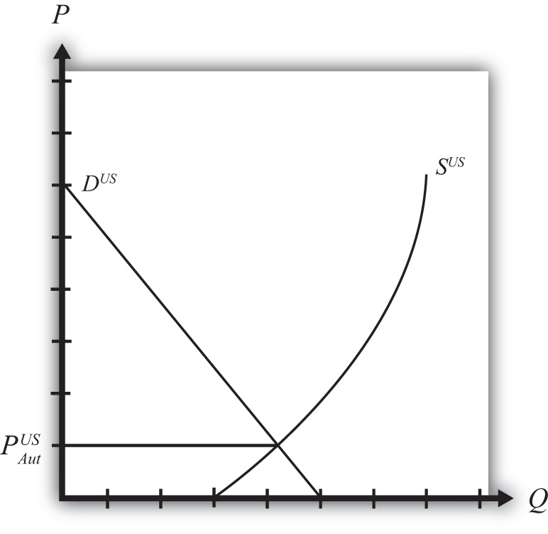Figure 7.2 "Mexican Wheat Market: Autarky Equilibrium" shows the supply and demand for wheat in the Mexican market. The supply curve represents the quantity of wheat that Mexican producers would be willing to supply at every potential price in the Mexican market. The demand curve represents demand by Mexican consumers at every potential price for wheat in the Mexican market. The intersection of demand and supply corresponds to the equilibrium autarky price and quantity in Mexico. The price, PAutMex, is the only price that will balance Mexican supply with demand for wheat.
Figure 7.2 Mexican Wheat Market: Autarky Equilibrium
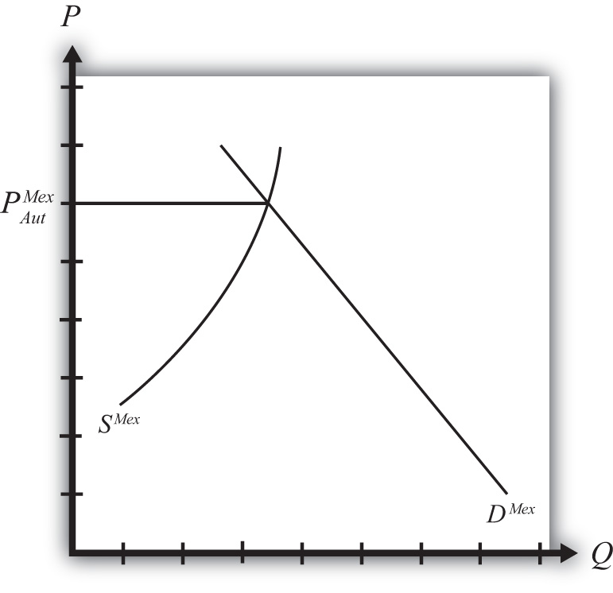The curves are drawn such that the U.S. autarky price is lower than the Mexican autarky price. This implies that if these two countries were to move from autarky to free trade, the United States would export wheat to Mexico. Once trade is opened, the higher Mexican price will induce profit-seeking U.S. firms to sell their wheat in Mexico, where it commands a higher price initially. As wheat flows into Mexico, the total supply of wheat rises, which will cause the price to fall. In the U.S. market, wheat supply falls because of U.S. exports. The reduced supply raises the equilibrium price in the United States. These prices move together as U.S. exports rise until the prices are equalized between the two markets. The free trade price of wheat, PFT, is shared by both countries.
To derive the free trade price and the quantity traded, we can construct an export supply curve for the United States and an import demand curve for Mexico. Notice that at prices above the autarky price in the United States, there is excess supply of wheat—that is, supply exceeds demand. If we consider prices either at or above the autarky price, we can derive an export supply curve for the United States. The equation for export supply is given by
where XSUS(.) is the export supply function, SUS(.) is the supply function for wheat in the United States, and DUS(.) is the demand function for wheat in the United States. Each function is dependent on the U.S. price of wheat, PUS.
Figure 7.3 Deriving the U.S. Export Supply Curve
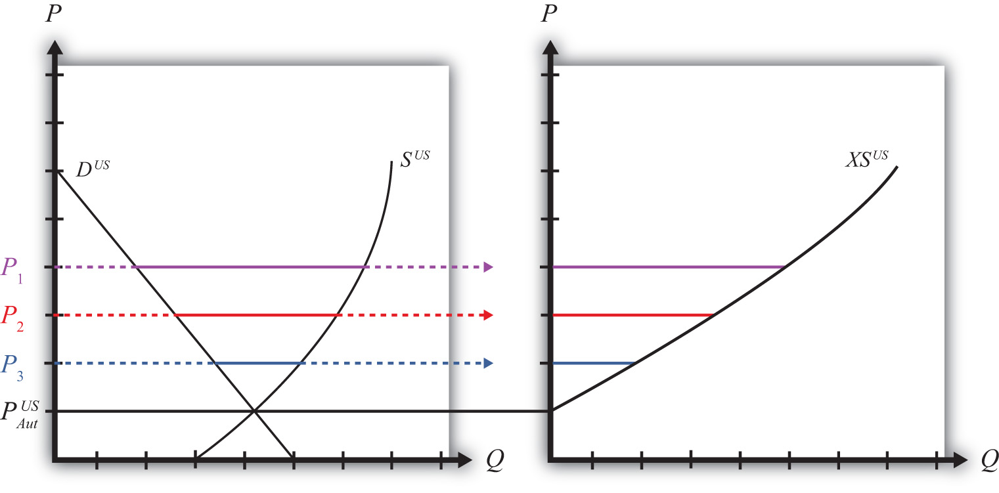Graphically, export supplyThe quantity of a product a country would wish to export at a particular price. The export supply curve is the schedule of export supply at every potential price (usually prices above the country’s autarky price). is the horizontal difference between the supply and demand curve at every price at and above the autarky price, as shown in Figure 7.3 "Deriving the U.S. Export Supply Curve". At the autarky price, PAutUS, export supply is zero. At prices P1, P2, and P3, export supply is given by the length of the like-colored line segment. To plot the export supply curve XSUS, we transfer each line segment to a separate graph and connect the points, as shown on the right in Figure 7.3 "Deriving the U.S. Export Supply Curve". The export supply curve gives the quantities the United States would be willing to export if it faced prices above its autarky price.
In Mexico, at prices below its autarky price there is excess demand for wheat since demand exceeds supply. If we consider prices either at or below the autarky price, we can derive an import demand curve for Mexico. The equation for import demand is given by
where MDMex(.) is the import demand function, DMex(.) is the demand function for wheat in Mexico, and SMex(.) is the supply function for wheat in Mexico. Each function is dependent on the Mexican price of wheat, PMex. Graphically, import demandThe quantity of a product a country would wish to import at a particular price. The import demand curve is the schedule of import demand at every potential price (usually prices below the country’s autarky price). is the horizontal difference between the demand and supply curve at every price at and below the autarky price, as shown in Figure 7.4 "Deriving the Mexican Import Demand Curve". At the autarky price, PAutMex, import demand is zero. At prices P1, P2, and P3, import demand is given by the length of the like-colored line segment. To plot the import demand curve MDMex, we transfer each line segment to a separate graph and connect the points, as shown on the right in Figure 7.4 "Deriving the Mexican Import Demand Curve". The import demand curve gives the quantities Mexico would be willing to import if it faced prices below its autarky price.
Figure 7.4 Deriving the Mexican Import Demand Curve
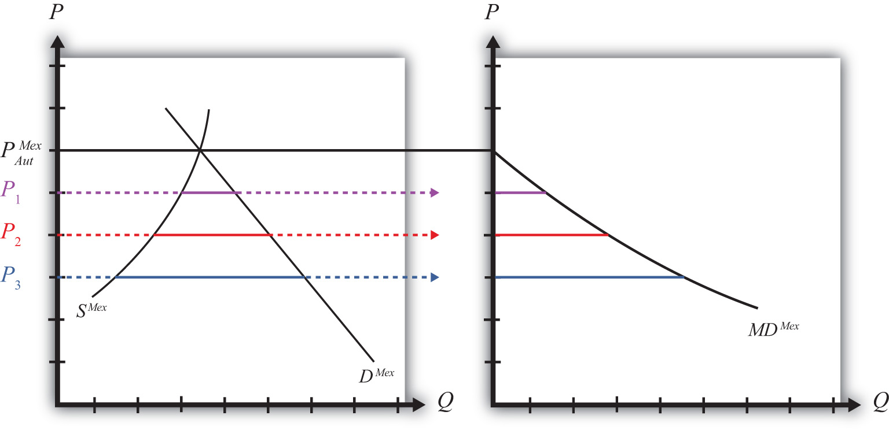The intersection of the U.S. export supply with Mexican import demand determines the equilibrium free trade price, PFT, and the quantity traded, QFT, where QFT = XSUS (PFT) = MDMex(PFT). See Figure 7.5 "Depicting a Free Trade Equilibrium". The free trade price, PFT, must be the price that equalizes the U.S. export supply with Mexican import demand. Algebraically, the free trade price is the price that solves
Figure 7.5 Depicting a Free Trade Equilibrium
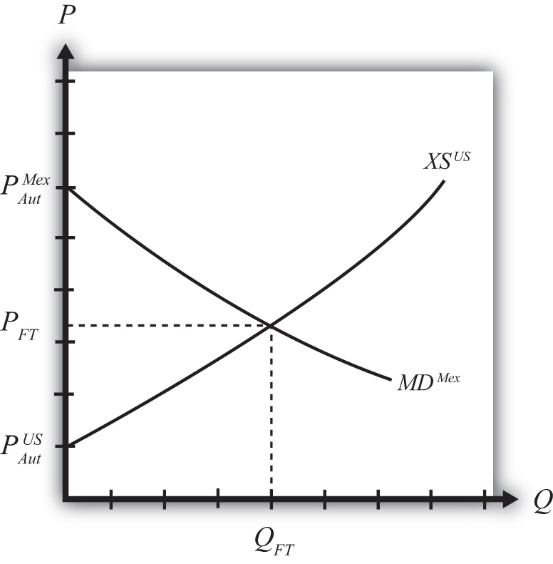This implies also that world supply is equal to world demand since
and
The small country assumption means that the country’s imports are a very small share of the world market—so small that even a complete elimination of imports would have an imperceptible effect on world demand for the product and thus would not affect the world price.
To depict a free trade equilibrium using an export supply and import demand diagram, we must redraw the export supply curve in light of the small country assumption. The assumption implies that the export supply curve is horizontal at the level of the world price. In this case, we call the importing country small. From the perspective of the small importing country, it takes the world price as exogenous since it can have no effect on it. From the exporter’s perspective, it is willing to supply as much of the product as the importer wants at the given world price.
Figure 7.6 Free Trade Equilibrium: Small Country Case

The free trade price, PFT, is the price that prevails in the export, or world, market. The quantity imported into the small country is found as the intersection between the downward-sloping import demand curve and the horizontal export supply curve.
Jeopardy Questions. As in the popular television game show, you are given an answer to a question and you must respond with the question. For example, if the answer is “a tax on imports,” then the correct question is “What is a tariff?”
A partial equilibrium analysis distinguishes between the welfare of consumers who purchase a product and the producers who produce it. Consumer welfare is measured using consumer surplus, while producer welfare is measured using producer surplus. Revenue collected by the government is assumed to be redistributed to others. Government revenue is either spent on public goods or is redistributed to someone in the economy, thus raising someone’s welfare.
Consumer surplus is used to measure the welfare of a group of consumers who purchase a particular product at a particular price. Consumer surplusThe difference between what consumers are willing to pay for a unit of the good and the amount consumers actually do pay for the product. is defined as the difference between what consumers are willing to pay for a unit of the good and the amount consumers actually do pay for the product. Willingness to pay can be read from a market demand curve for a product. The market demand curve shows the quantity of the good that would be demanded by all consumers at each and every price that might prevail. Read the other way, the demand curve tells us the maximum price that consumers would be willing to pay for any quantity supplied to the market.
A graphical representation of consumer surplus can be derived by considering the following exercise. Suppose that only one unit of a good is available in a market. As shown in Figure 7.7 "Calculating Consumer Surplus", that first unit could be sold at the price P1. In other words, there is a consumer in the market who would be willing to pay P1. Presumably that person either has a relatively high desire or need for the product or the person has a relatively high income. To sell two units of the good, the price would have to be lowered to P2. (This assumes that the firm cannot perfectly price discriminate and charge two separate prices to two customers.) A slightly lower price might induce another customer to purchase the product or might induce the first customer to buy two units. Three units of the good could be sold if the price is lowered to P3, and so on.
Figure 7.7 Calculating Consumer Surplus

The price that ultimately prevails in a free market is that price that equalizes market supply with market demand. That price will be P in Figure 7.7 "Calculating Consumer Surplus" as long as the firms do not price discriminate. Now let’s go back to the first unit that could have been sold. The person who would have been willing to pay P1 for a unit of the good ultimately pays only P for the unit. The difference between the two prices represents the amount of consumer surplus that accrues to that person. For the second unit of the good, someone would have been willing to pay P2 but ultimately pays P. The second unit generates a smaller amount of surplus than the first unit.
We can continue this procedure until the market supply at the price P is reached. The total consumer surplus in the market is given by the sum of the areas of the rectangles. If many units of the product are sold, then a one-unit width would be much smaller than shown in Figure 7.7 "Calculating Consumer Surplus". Thus total consumer surplus can reasonably be measured as the area between the demand curve and the horizontal line drawn at the equilibrium market price. This is shown as the red triangle in the diagram. The area representing consumer surplus is measured in dollars.
Suppose the supply of a good rises, represented by a rightward shift in the supply curve from S to S′ in Figure 7.8 "Depicting a Change in Consumer Surplus". At the original price, P1, consumer surplus is given by the blue area in the diagram (the triangular area between the P1 price line and the demand curve). The increase in supply lowers the market price to P2. The new level of consumer surplus is now given by the sum of the blue and yellow areas in Figure 7.8 "Depicting a Change in Consumer Surplus" (the triangular area between the P2 price line and the demand curve). The change in consumer surplus, CS, is given by the yellow area in Figure 7.8 "Depicting a Change in Consumer Surplus" (the area denoted by a and b). Note that the change in consumer surplus is determined as the area between the price that prevails before, the price that prevails after, and the demand curve. In this case, consumer surplus rises because the price falls. Two groups of consumers are affected. Consumers who would have purchased the product even at the higher price, P1, now receive more surplus (P1 − P2) for each unit they purchase. These extra benefits are represented by the rectangular area a in the diagram. Also, there are additional consumers who were unwilling to purchase the product at price P1 but are now willing to purchase at the price P2. Their consumer surplus is given by the triangular area b in the diagram.
Figure 7.8 Depicting a Change in Consumer Surplus

Producer surplus is used to measure the welfare of a group of firms that sell a particular product at a particular price. Producer surplusThe difference between what producers actually receive when selling a product and the amount they would be willing to accept for a unit of the good. is defined as the difference between what producers actually receive when selling a product and the amount they would be willing to accept for a unit of the good. Firms’ willingness to accept payments can be read from a market supply curve for a product. The market supply curve shows the quantity of the good that firms would supply at each and every price that might prevail. Read the other way, the supply curve tells us the minimum price that producers would be willing to accept for any quantity demanded by the market.
A graphical representation of producer surplus can be derived by considering the following exercise. Suppose that only one unit of a good is demanded in a market. As shown in Figure 7.9 "Calculating Producer Surplus", some firm would be willing to accept the price P1 if only one unit is produced. If two units of the good were demanded in the market, then the minimum price to induce two units to be supplied is P2. A slightly higher price would induce another firm to supply an additional unit of the good. Three units of the good would be made available if the price were raised to P3, and so on.
Figure 7.9 Calculating Producer Surplus
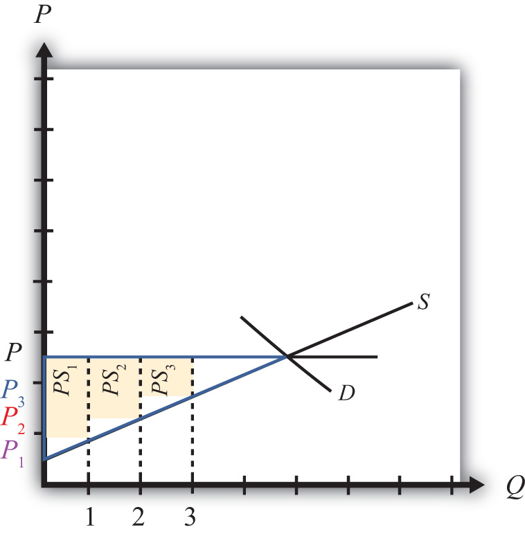The price that ultimately prevails in a free market is the price that equalizes market supply with market demand. That price will be P in Figure 7.9 "Calculating Producer Surplus". Now let’s go back to the first unit demanded. Some firm would have been willing to supply one unit at the price P1 but ultimately receives P for the unit. The difference between the two prices represents the amount of producer surplus that accrues to the firm. For the second unit of the good, some firm would have been willing to supply the unit at the price P2 but ultimately receives P. The second unit generates a smaller amount of surplus than the first unit.
We can continue this procedure until the market demand at the price P is reached. The total producer surplus in the market is given by the sum of the areas of the rectangles. If many units of the product are sold, then the one-unit width would be much smaller than shown in Figure 7.9 "Calculating Producer Surplus". Thus total producer surplus can reasonably be measured as the area between the supply curve and the horizontal line drawn at the equilibrium market price. This is shown as the yellow triangle in the diagram. The area representing producer surplus is measured in dollars.
Producer surplus can be interpreted as the amount of revenue allocated to fixed costs and profit in the industry. This is because the market supply curve corresponds to industry marginal costs. Recall that firms choose output in a perfectly competitive market by setting the price equal to the marginal cost. Thus the marginal cost is equal to the price P in Figure 7.10 "Interpreting Producer Surplus" at an industry output equal to Q. The marginal cost represents the addition to cost for each additional unit of output. As such, it represents an additional variable cost for each additional unit of output. This implies that the area under the supply curve at an output level such as Q represents the total variable cost (TVC) to the industry, shown as the blue area in Figure 7.10 "Interpreting Producer Surplus".
Figure 7.10 Interpreting Producer Surplus
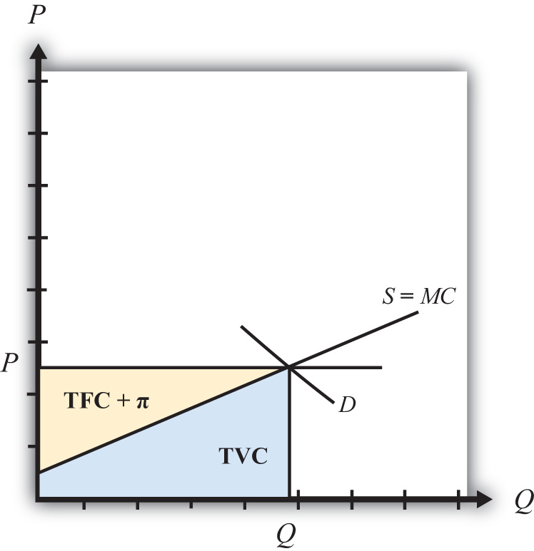On the other hand, the market price multiplied by the quantity produced (P × Q) represents the total revenue received by firms in the industry. This is represented by the sum of the blue and yellow areas in the diagram. The difference between the total revenue and the total variable cost, in turn, represents payments made to fixed factors of production, or total fixed cost (TFC), and any short-run profits (Π) accruing to firms in the industry (the yellow area in the figure—that is, the area between the price line and the supply curve). This area is the same as the producer surplus.
Since fixed factors of production represent capital equipment that must be installed by the owners of the firms before any output can be produced, it is reasonable to use producer surplus to measure the well-being of the owners of the firms in the industry.
Suppose the demand for a good rises, represented by a rightward shift in the demand curve from D to D′ in Figure 7.11 "Depicting a Change in Producer Surplus". At the original price, P1, producer surplus is given by the yellow area in Figure 7.11 "Depicting a Change in Producer Surplus" (the triangular area between the P1 price and the supply curve). The increase in demand raises the market price to P2. The new level of producer surplus is now given by the sum of the blue and yellow areas in the figure (the triangular area between the price P2 and the supply curve). The change in producer surplus, PS, is given by the blue area in the figure (the area between the two prices and the supply curve). Note that the change in producer surplus is determined as the area between the price that prevails before, the price that prevails after, and the supply curve. In this case, producer surplus rises because the price increases and output rises. The increase in price and output raises the return to fixed costs and the profitability of firms in the industry. The increase in output also requires an increase in variable factors of production such as labor. Thus one additional benefit to firms not measured by the increase in producer surplus is an increase in industry employment.
Figure 7.11 Depicting a Change in Producer Surplus

Jeopardy Questions. As in the popular television game show, you are given an answer to a question and you must respond with the question. For example, if the answer is “a tax on imports,” then the correct question is “What is a tariff?”
Suppose the demand for baseballs is given by D = 1,000 – 20P.
Suppose the supply of baseballs is given by S = 30P.
Suppose Mexico, the importing country in free trade, imposes a specific tariff on imports of wheat. As a tax on imports, the tariff will inhibit the flow of wheat across the border. It will now cost more to move the product from the United States into Mexico.
As a result, the supply of wheat to the Mexican market will fall, inducing an increase in the price of wheat. Since wheat is homogeneous and the market is perfectly competitive, the price of all wheat sold in Mexico, both Mexican wheat and U.S. imports, will rise in price. The higher price will reduce Mexico’s import demand.
The reduced wheat supply to Mexico will shift back supply to the U.S. market. Since Mexico is assumed to be a large importer, the supply shifted back to the U.S. market will be enough to induce a reduction in the U.S. price. The lower price will reduce the U.S. export supply.
For this reason, a country that is a large importer is said to have monopsony power in tradeAnother term to describe a large importing country—that is, a country whose policy actions can affect international prices.. A monopsony arises whenever there is a single buyer of a product. A monopsony can gain an advantage for itself by reducing its demand for a product in order to induce a reduction in the price. In a similar way, a country with monopsony power can reduce its demand for imports (by setting a tariff) to lower the price it pays for the imported product. Note that these price effects are identical in direction to the price effects of an import quota, a voluntary export restraint, and an export tax.
A new tariff-ridden equilibrium will be reached when the following two conditions are satisfied:
and
where T is the tariff, PTMex is the price in Mexico after the tariff, and PTUS is the price in the United States after the tariff.
The first condition represents a price wedge between the final U.S. price and the Mexican price equal to the amount of the tariff. The prices must differ by the tariff because U.S. suppliers of wheat must receive the same price for their product regardless of whether the product is sold in the United States or Mexico, and all wheat sold in Mexico must be sold at the same price. Since a tax is collected at the border, the only way for these price equalities within countries to arise is if the price differs across countries by the amount of the tax.
The second condition states that the amount the United States wants to export at its new lower price must be equal to the amount Mexico wants to import at its new higher price. This condition guarantees that world supply of wheat equals world demand for wheat.
The tariff equilibrium is depicted graphically in Figure 7.12 "Depicting a Tariff Equilibrium: Large Country Case". The Mexican price of wheat rises from PFT to PTMex, which reduces its import demand from QFT to QT. The U.S. price of wheat falls from PFT to PTUS, which also reduces its export supply from QFT to QT. The difference in the prices between the two markets is equal to the specific tariff rate, T.
Figure 7.12 Depicting a Tariff Equilibrium: Large Country Case
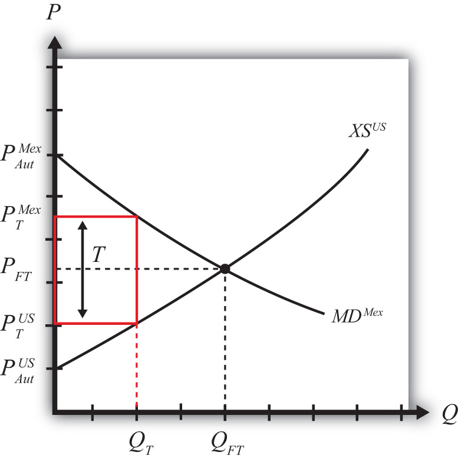Notice that there is a unique set of prices that satisfies the equilibrium conditions for every potential tariff that is set. If the tariff were set higher than T, the price wedge would rise, causing a further increase in the Mexican price, a further decrease in the U.S. price, and a further reduction in the quantity traded.
At the extreme, if the tariff were set equal to the difference in autarky prices (i.e., ), then the quantity traded would fall to zero. In other words, the tariff would prohibit trade. Indeed, any tariff set greater than or equal to the difference in autarky prices would eliminate trade and cause the countries to revert to autarky in that market. Thus we define a prohibitive tariff as any tariff, Tpro, such that
For an intuitive explanation about why these price changes would likely occur in a real-world setting, read the following story about the likely dynamic adjustment process. Technically, this story is not a part of the partial equilibrium model, which is a static model that does not contain adjustment dynamics. However, it is worthwhile to think about how a real market adjusts to the equilibria described in these simple models.
Suppose the United States and Mexico are initially in a free trade equilibrium. Mexico imports wheat at the free trade price of $10 per bushel. Imagine that the market for unprocessed wheat in both the United States and Mexico is located in a warehouse in each country. Each morning, wheat arrives from the suppliers and is placed in the warehouse for sale. During the day, consumers of unprocessed wheat arrive to buy the supply. For simplicity, assume there is no service charge collected by the intermediary that runs the warehouses. Thus, for each bushel sold, $10 passes from the consumer directly to the producer.
Each day, the wheat market clears in the United States and Mexico at the price of $10. This means that the quantity of wheat supplied at the beginning of the day is equal to the quantity purchased by consumers during the day. Supply equals demand in each market at the free trade price of $10.
Now suppose that Mexico places a $2 specific tariff on imports of wheat. Let’s assume that the agents in the model react slowly and rather naively to the change. Let’s also suppose that the $2 tariff is a complete surprise.
Each day, prior to the tariff, trucks carrying U.S. wheat would cross the Mexican border in the wee hours, unencumbered, en route to the Mexican wheat market. On the day the tariff is imposed, the trucks are stopped and inspected. The drivers are informed that they must pay $2 for each bushel that crosses into Mexico.
Suppose the U.S. exporters of wheat naively pay the tax and ship the same number of bushels to the Mexican market that day. However, to recoup their losses, they raise the price by the full $2. The wheat for sale in Mexico now is separated into two groups. The imported U.S. wheat now has a price tag of $12, while the Mexican-supplied wheat retains the $10 price. Mexican consumers now face a choice. However, since Mexican and U.S. wheat are homogeneous, the choice is simple. Every Mexican consumer will want to purchase the Mexican wheat at $10. No one will want the U.S. wheat. Of course, sometime during the day, Mexican wheat will run out and consumers will either have to buy the more expensive wheat or wait till the next day. Thus some $12 U.S. wheat will sell, but not the full amount supplied. At the end of the day, a surplus will remain. This means that there will be an excess demand for Mexican wheat and an excess supply of U.S. wheat in the Mexican market.
Mexican producers of wheat will quickly realize that they can supply more to the market and raise their price. A higher price is possible because the competition is now charging $12. The higher supply and higher price will raise the profitability of the domestic wheat producers. (Note that the supply of wheat may not rise quickly since it is grown over an annual cycle. However, the supply of a different type of good could be raised rapidly. The length of this adjustment will depend on the nature of the product.) U.S. exporters will quickly realize that no one wants to buy their wheat at a price of $12. Their response will be to reduce export supply and lower their price in the Mexican market.
As time passes, in the Mexican market, the price of Mexican-supplied wheat will rise from $10 and the price of U.S. supplied wheat will fall from $12 until the two prices meet somewhere in between. The homogeneity of the goods requires that if both goods are to be sold in the Mexican market, then they must sell at the same price in equilibrium.
As these changes take place in the Mexican market, other changes occur in the U.S. market. When U.S. exporters of wheat begin to sell less in Mexico, that excess supply is shifted back to the U.S. market. The warehouse in the United States begins to fill up with more wheat than U.S. consumers are willing to buy at the initial price of $10. Thus at the end of each day, wheat supplies remain unsold. An inventory begins to pile up. Producers realize that the only way to unload the excess wheat is to cut the price. Thus the price falls in the U.S. market. At lower prices, though, U.S. producers are willing to supply less, thus production is cut back as well.
In the end, the U.S. price falls and the Mexican price rises until the two prices differ by $2, the amount of the tariff. A Mexican price of $11.50 and a U.S. price of $9.50 is one possibility. A Mexican price of $11 and a U.S. price of $9 is another. U.S. producers now receive the same lower price for wheat whether they sell in the United States or Mexico. The exported wheat is sold at the higher Mexican price, but $2 per bushel is paid to the Mexican government as tariff revenue. Thus U.S. exporters receive the U.S. price for the wheat sold in Mexico.
The higher price in Mexico raises domestic supply and reduces domestic demand, thus reducing their demand for imports. The lower price in the United States reduces U.S. supply, raises U.S. demand, and thus lowers U.S. export supply to Mexico. In a two-country world, the $2 price differential that arises must be such that U.S. export supply equals Mexican import demand.
Two of the effects of a tariff are worthy of emphasis. First, although a tariff represents a tax placed solely on imported goods, the domestic price of both imported and domestically produced goods will rise. In other words, a tariff will cause local producers of the product to raise their prices. Why?
In the model, it is assumed that domestic goods are perfectly substitutable for imported goods (i.e., the goods are homogeneous). When the price of imported goods rises due to the tariff, consumers will shift their demand from foreign to domestic suppliers. The extra demand will allow domestic producers an opportunity to raise output and prices to clear the market. In so doing, they will also raise their profit. Thus as long as domestic goods are substitutable for imports and as long as the domestic firms are profit seekers, the price of the domestically produced goods will rise along with the import price.
The average consumer may not recognize this rather obvious point. For example, suppose the United States places a tariff on imported automobiles. Consumers of U.S.-made automobiles may fail to realize that they are likely to be affected. After all, they might reason, the tax is placed only on imported automobiles. Surely this would raise the imports’ prices and hurt consumers of foreign cars, but why would that affect the price of U.S. cars? The reason, of course, is that the import car market and the domestic car market are interconnected. Indeed, the only way U.S.-made car prices would not be affected by the tariff is if consumers were completely unwilling to substitute U.S. cars for imported cars or if U.S. automakers were unwilling to take advantage of a profit-raising possibility. These conditions are probably unlikely in most markets around the world.
The second interesting price effect arises because the importing country is large. When a large importing country places a tariff on an imported product, it will cause the foreign price to fall. The reason? The tariff will reduce imports into the domestic country, and since its imports represent a sizeable proportion of the world market, world demand for the product will fall. The reduction in demand will force profit-seeking firms in the rest of the world to lower output and price in order to clear the market.
The effect on the foreign price is sometimes called the terms of trade effect. The terms of trade is sometimes defined as the price of a country’s export goods divided by the price of its import goods. Here, since the importing country’s import good will fall in price, the country’s terms of trade will rise. Thus a tariff implemented by a large country will cause an improvement in the country’s terms of trade.
Jeopardy Questions. As in the popular television game show, you are given an answer to a question and you must respond with the question. For example, if the answer is “a tax on imports,” then the correct question is “What is a tariff?”
Complete the following descriptions of the equilibrium conditions with a tariff in place.
Suppose that there are only two trading countries: one importing country and one exporting country. The supply and demand curves for the two countries are shown in Figure 7.13 "Welfare Effects of a Tariff: Large Country Case". PFT is the free trade equilibrium price. At that price, the excess demand by the importing country equals excess supply by the exporter.
Figure 7.13 Welfare Effects of a Tariff: Large Country Case

The quantity of imports and exports is shown as the blue line segment on each country’s graph. (That’s the horizontal distance between the supply and demand curves at the free trade price.) When a large importing country implements a tariff it will cause an increase in the price of the good on the domestic market and a decrease in the price in the rest of the world (RoW). Suppose after the tariff the price in the importing country rises to and the price in the exporting country falls to . If the tariff is a specific tax, then the tariff rate would be , equal to the length of the green line segment in the diagram. If the tariff were an ad valorem tax, then the tariff rate would be given by .
Table 7.1 "Welfare Effects of an Import Tariff" provides a summary of the direction and magnitude of the welfare effects to producers, consumers, and the governments in the importing and exporting countries. The aggregate national welfare effects and the world welfare effects are also shown.
Table 7.1 Welfare Effects of an Import Tariff
| Importing Country | Exporting Country | |
|---|---|---|
| Consumer Surplus | − (A + B + C + D) | + e |
| Producer Surplus | + A | − (e + f + g + h) |
| Govt. Revenue | + (C + G) | 0 |
| National Welfare | + G − (B + D) | − (f + g + h) |
| World Welfare | −; (B + D) − (f + h) |
Refer to Table 7.1 "Welfare Effects of an Import Tariff" and Figure 7.13 "Welfare Effects of a Tariff: Large Country Case" to see how the magnitudes of the changes are represented.
Tariff effects on the importing country’s consumers. Consumers of the product in the importing country suffer a reduction in well-being as a result of the tariff. The increase in the domestic price of both imported goods and the domestic substitutes reduces the amount of consumer surplus in the market.
Tariff effects on the importing country’s producers. Producers in the importing country experience an increase in well-being as a result of the tariff. The increase in the price of their product on the domestic market increases producer surplus in the industry. The price increases also induce an increase in the output of existing firms (and perhaps the addition of new firms); an increase in employment; and an increase in profit, payments, or both to fixed costs.
Tariff effects on the importing country’s government. The government receives tariff revenue as a result of the tariff. Who benefits from the revenue depends on how the government spends it. Typically, the revenue is simply included as part of the general funds collected by the government from various sources. In this case, it is impossible to identify precisely who benefits. However, these funds help support many government spending programs, which presumably help either most people in the country, as is the case with public goods, or certain worthy groups. Thus someone within the country is the likely recipient of these benefits.
Tariff effects on the importing country. The aggregate welfare effect for the country is found by summing the gains and losses to consumers, producers, and the government. The net effect consists of three components: a positive terms of trade effect (G), a negative production distortion (B), and a negative consumption distortion (D).
Because there are both positive and negative elements, the net national welfare effect can be either positive or negative. The interesting result, however, is that it can be positive. This means that a tariff implemented by a large importing country may raise national welfare.
Generally speaking, the following are true:
However, it is also important to note that not everyone’s welfare rises when there is an increase in national welfare. Instead, there is a redistribution of income. Producers of the product and recipients of government spending will benefit, but consumers will lose. A national welfare increase, then, means that the sum of the gains exceeds the sum of the losses across all individuals in the economy. Economists generally argue that, in this case, compensation from winners to losers can potentially alleviate the redistribution problem.
Tariff effects on the exporting country’s consumers. Consumers of the product in the exporting country experience an increase in well-being as a result of the tariff. The decrease in their domestic price raises the amount of consumer surplus in the market.
Tariff effects on the exporting country’s producers. Producers in the exporting country experience a decrease in well-being as a result of the tariff. The decrease in the price of their product in their own market decreases producer surplus in the industry. The price decline also induces a decrease in output, a decrease in employment, and a decrease in profit, payments, or both to fixed costs.
Tariff effects on the exporting country’s government. There is no effect on the exporting country’s government revenue as a result of the importer’s tariff.
Tariff effects on the exporting country. The aggregate welfare effect for the country is found by summing the gains and losses to consumers and producers. The net effect consists of three components: a negative terms of trade effect (g), a negative consumption distortion (f), and a negative production distortion (h).
Since all three components are negative, the importer’s tariff must result in a reduction in national welfare for the exporting country. However, it is important to note that a redistribution of income occurs—that is, some groups gain while others lose. In this case, the sum of the losses exceeds the sum of the gains.
Tariff effects on world welfare. The effect on world welfare is found by summing the national welfare effects on the importing and exporting countries. By noting that the terms of trade gain to the importer is equal to the terms of trade loss to the exporter, the world welfare effect reduces to four components: the importer’s negative production distortion (B), the importer’s negative consumption distortion (D), the exporter’s negative consumption distortion (f), and the exporter’s negative production distortion (h). Since each of these is negative, the world welfare effect of the import tariff is negative. The sum of the losses in the world exceeds the sum of the gains. In other words, we can say that an import tariff results in a reduction in world production and consumption efficiency.
Jeopardy Questions. As in the popular television game show, you are given an answer to a question and you must respond with the question. For example, if the answer is “a tax on imports,” then the correct question is “What is a tariff?”
Consider the following trade policy actions (each applied by the domestic country) listed along the top row of the table below. In the empty boxes, use the following notation to indicate the effect of each policy on the variables listed in the first column. Use a partial equilibrium model to determine the answers and assume that the shapes of the supply and demand curves are “normal.” Assume that none of the policies begin with or result in prohibitive trade policies. Also assume that none of the policies correct for market imperfections or distortions. Use the following notation:
+ the variable increases
− the variable decreases
0 the variable does not change
A the variable change is ambiguous (i.e., it may rise, it may fall)
For example, an import tariff applied by a large country will cause an increase in the domestic price of the import good; therefore, a + is placed in the first box of the table.
Table 7.2 Trade Policy Effects
| I | II | |
|---|---|---|
| Import Tariff by a Large Country—Initial Tariff Is Zero | Import Tariff Reduction by a Large Country | |
| Domestic Market Price | + | |
| Domestic Industry Employment | ||
| Domestic Consumer Welfare | ||
| Domestic Producer Welfare | ||
| Domestic Government Revenue | ||
| Domestic National Welfare | ||
| Foreign Price | ||
| Foreign Consumer Welfare | ||
| Foreign Producer Welfare | ||
| Foreign National Welfare |
Consider the following partial equilibrium diagram depicting two countries, China and the United States, trading a product with each other. Suppose PFT is the free trade price, PUS is the price in the United States when a tariff is in place, and PC is the price in China when a tariff is in place. Answer the following questions by referring to the figure below. Assume the letters, A, B, C, D, E, F, G, H, I, and J refer to areas on the graph. The letters v, w, x, y, and z refer to lengths.
Figure 7.14 Two Large Trading Countries
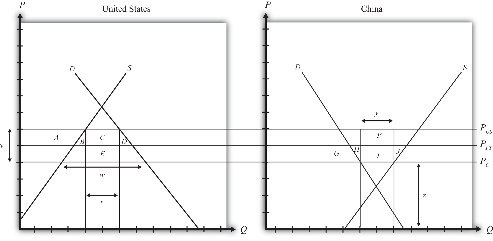The possibility that a tariff could improve national welfare for a large country in international markets was first noted by Robert Torrens. Since the welfare improvement occurs only if the terms of trade gain exceeds the total deadweight losses, the argument is commonly known as the terms of trade argument for protection.
Economists have studied the conditions under which a tariff will improve welfare in a variety of perfectly competitive models. This section describes the general results that come from that analysis.
Consider Figure 7.15 "Derivation of the Optimal Tariff: Large Country", which plots the levels of consumer surplus (CS), producer surplus (PS), and tariff revenue (TR) at different tariff rates. The origin corresponds to a zero tariff rate, or free trade. As the tariff is increased from zero, consumer surplus falls since the domestic price rises. This is shown by the solid declining (green) CS line. When the tariff becomes prohibitive at tp, the price settles at the autarky price, and any further increases in the tariff have no effect on consumer surplus. Hence the CS line becomes flat above tp.
Figure 7.15 Derivation of the Optimal Tariff: Large Country

Producer surplus (PS), the red dotted line, rises as the tariff is increased from zero; however, it rises at a lower rate than consumer surplus falls. This occurs because, for an importing country, producer surplus increases are less than the change in consumer surplus for any increase in the tariff. When the prohibitive tariff is reached, again the price settles at the autarky price, and any further increases in the tariff rate have no effect on producer surplus.
Tariff revenue (TR), the blue dashed line, first increases with the increase in the tariff and then decreases for higher tariff rates. This occurs because tariff revenue equals the tariff rate multiplied by imports. As the tariff is increased from zero, imports fall at a slower rate than the increase in the tariff rate, hence revenue rises. Eventually, imports begin to fall faster than the tariff rate rises, and tariff revenue declines. The tariff rate that generates the highest tariff revenue is called the maximum revenue tariffThe tariff that achieves the highest government revenue..
Another way to see that tariff revenue must rise and then fall with increasing tariffs is to note that when the tariff rate is zero, tariff revenue has to be zero for any level of imports. Also, when the tariff rate is at or above tp, the prohibitive tariff, imports are zero, thus whatever the tariff rate, tariff revenue again must be zero. Somewhere between a zero tariff and the prohibitive tariff, tariff revenue has to be positive. Thus tariff revenue must rise from zero and then fall back to zero when it reaches tp.
The national welfare level at each tariff rate is defined as the sum of consumer surplus, producer surplus, and tariff revenue. The vertical summation of these three curves generates the national welfare (NW) curve given by the thick, solid blue-green line. In Figure 7.15 "Derivation of the Optimal Tariff: Large Country", the vertical summation is displayed for five different levels of the tariff rate.
The basic shape of the national welfare line is redrawn in Figure 7.16 "Optimal Tariff: Large Country Case". Note that national welfare first rises and then falls as the tariff is increased from zero. For one tariff rate (topt), the country can realize the highest level of national welfare (NWopt), one that is higher than that achievable in free trade. We call that tariff rate the “optimal tariff.” One regularity that results is that the optimal tariff is always less than the maximum revenue tariff.
Figure 7.16 Optimal Tariff: Large Country Case
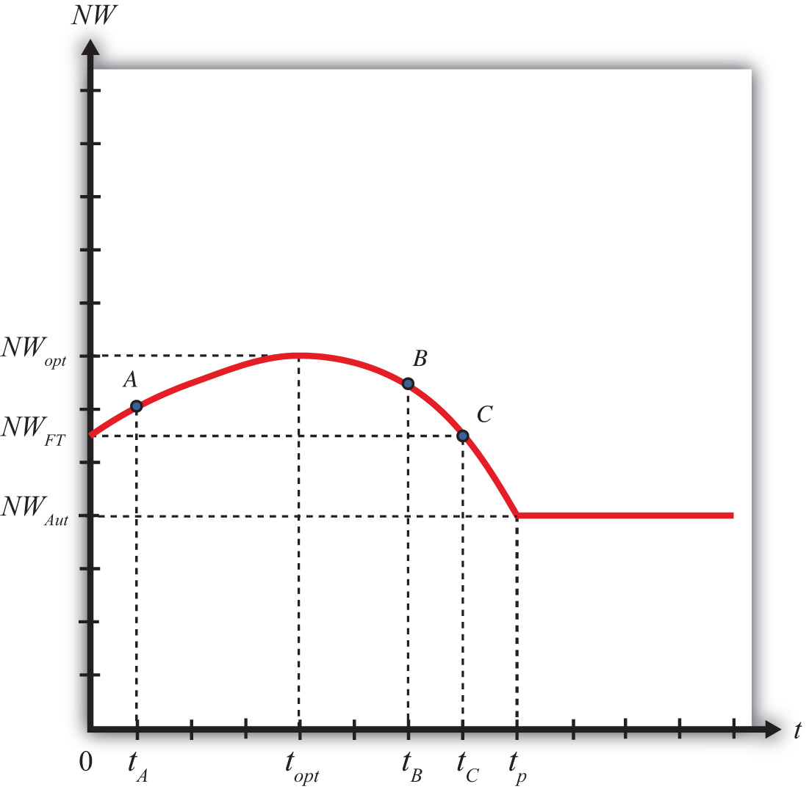If the tariff is raised above the optimal rate, as with an increase from topt to tB, then national welfare will fall. The terms of trade gain, which rises as low tariffs are increased, will begin to fall at a higher tariff rate. Since the deadweight losses continue to rise, both effects contribute to the decline in national welfare. Note, however, that at a tariff level like tB, national welfare still exceeds the free trade level.
Eventually, at even higher tariff rates, national welfare will fall below the free trade level. In Figure 7.16 "Optimal Tariff: Large Country Case", this occurs at tariff rates greater than tC. The higher the tariff is raised, the lower will be the level of imports. At a sufficiently high tariff, imports will be eliminated entirely. The tariff will prohibit trade. At the prohibitive tariff (tp), there is no tariff revenue, which implies that the previously positive terms of trade gain is now zero. The only effect of the tariff is the deadweight loss. The economy is effectively in autarky, at least with respect to this one market, hence national welfare is at NWAut. Note that any additional increases in the tariff above tp will maintain national welfare at NWAut since the market remains at the autarky equilibrium.
Trade liberalization can be represented by a decrease in the tariff rate on imports into a country. If the country is large in international markets, then the analysis in this chapter suggests that the effect on national welfare will depend on the values of the original tariff rate and the liberalized tariff rate.
For example, if the tariff is reduced from topt to tA, then national welfare will fall when the country liberalizes trade in this market. However, if the tariff is reduced from tB to topt, then national welfare will rise when trade liberalization occurs. This implies that trade liberalization does not necessarily improve welfare for a large importing country.
Jeopardy Questions. As in the popular television game show, you are given an answer to a question and you must respond with the question. For example, if the answer is “a tax on imports,” then the correct question is “What is a tariff?”
The small country assumption means that the country’s imports are a very small share of the world market—so small that even a complete elimination of imports would have an imperceptible effect on world demand for the product and thus would not affect the world price. Thus when a tariff is implemented by a small country, there is no effect on the world price.
The small country assumption implies that the export supply curve is horizontal at the level of the world price. The small importing country takes the world price as exogenous since it can have no effect on it. The exporter is willing to supply as much of the product as the importer wants at the given world price.
When the tariff is placed on imports, two conditions must hold in the final equilibrium—the same two conditions as in the case of a large country—namely,
and
However, now PTUS remains at the free trade price. This implies that, in the case of a small country, the price of the import good in the importing country will rise by the amount of the tariff, or in other words . As seen in Figure 7.17 "Depicting a Tariff Equilibrium: Small Country Case", the higher domestic price reduces import demand and export supply to QT.
Figure 7.17 Depicting a Tariff Equilibrium: Small Country Case

Jeopardy Questions. As in the popular television game show, you are given an answer to a question and you must respond with the question. For example, if the answer is “a tax on imports,” then the correct question is “What is a tariff?”
Consider a market in a small importing country that faces an international or world price of PFT in free trade. The free trade equilibrium is depicted in Figure 7.18 "Welfare Effects of a Tariff: Small Country Case", where PFT is the free trade equilibrium price. At that price, domestic demand is given by DFT, domestic supply by SFT, and imports by the difference DFT − SFT (the blue line in the figure).
Figure 7.18 Welfare Effects of a Tariff: Small Country Case
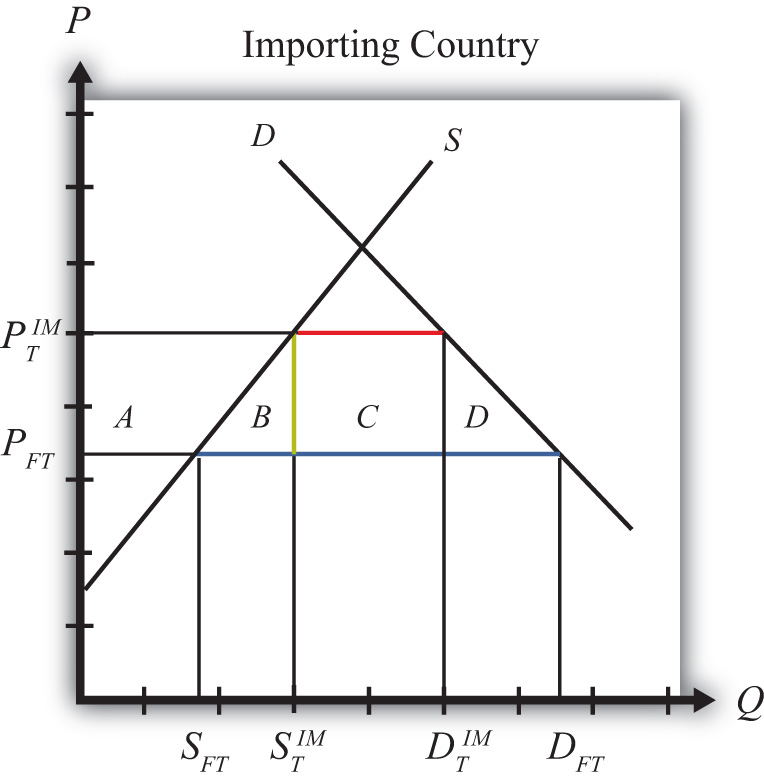When a specific tariff is implemented by a small country, it will raise the domestic price by the full value of the tariff. Suppose the price in the importing country rises to because of the tariff. In this case, the tariff rate would be , equal to the length of the green line segment in the figure.
Table 7.3 "Welfare Effects of an Import Tariff" provides a summary of the direction and magnitude of the welfare effects to producers, consumers, and the governments in the importing country. The aggregate national welfare effect is also shown.
Table 7.3 Welfare Effects of an Import Tariff
| Importing Country | |
|---|---|
| Consumer Surplus | − (A + B + C + D) |
| Producer Surplus | + A |
| Govt. Revenue | + C |
| National Welfare | − B − D |
Refer to Table 7.3 "Welfare Effects of an Import Tariff" and Figure 7.18 "Welfare Effects of a Tariff: Small Country Case" to see how the magnitudes of the changes are represented.
Tariff effects on the importing country’s consumers. Consumers of the product in the importing country are worse off as a result of the tariff. The increase in the domestic price of both imported goods and the domestic substitutes reduces consumer surplus in the market.
Tariff effects on the importing country’s producers. Producers in the importing country are better off as a result of the tariff. The increase in the price of their product increases producer surplus in the industry. The price increases also induce an increase in the output of existing firms (and perhaps the addition of new firms), an increase in employment, and an increase in profit, payments, or both to fixed costs.
Tariff effects on the importing country’s government. The government receives tariff revenue as a result of the tariff. Who will benefit from the revenue depends on how the government spends it. These funds help support diverse government spending programs; therefore, someone within the country will be the likely recipient of these benefits.
Tariff effects on the importing country. The aggregate welfare effect for the country is found by summing the gains and losses to consumers, producers, and the government. The net effect consists of two components: a negative production efficiency loss (B) and a negative consumption efficiency loss (D). The two losses together are typically referred to as “deadweight losses.”
Because there are only negative elements in the national welfare change, the net national welfare effect of a tariff must be negative. This means that a tariff implemented by a small importing country must reduce national welfare.
In summary, the following are true:
Consider the following trade policy action (applied by the domestic country) listed along the top row of the table below. In the empty boxes, use the following notation to indicate the effect of the policy on the variables listed in the first column. Use a partial equilibrium model to determine the answers, and assume that the shapes of the supply and demand curves are “normal.” Assume that the policy does not begin with, or result in, prohibitive trade policies. Also assume that the policy does not correct for market imperfections or distortions. Use the following notation:
+ the variable increases
− the variable decreases
0 the variable does not change
A the variable change is ambiguous (i.e., it may rise, it may fall)
Table 7.4 Trade Policy Effects
| Import Tariff Reduction by a Small Country | |
|---|---|
| Domestic Market Price | |
| Domestic Industry Employment | |
| Domestic Consumer Welfare | |
| Domestic Producer Welfare | |
| Domestic Government Revenue | |
| Domestic National Welfare | |
| Foreign Price | |
| Foreign Consumer Welfare | |
| Foreign Producer Welfare | |
| Foreign National Welfare |
Consider the following partial equilibrium diagram depicting the market for radios in Portugal, a small importing country. Suppose PFT is the free trade price and PT is the price in Portugal when a tariff is in place. Answer the following questions by referring to the diagram. Assume the letters, A, B, C, D, and E refer to areas on the graph. The letters v, w, x, and y refer to lengths. (Be sure to include the direction of changes by indicating “+” or “−.”)
Figure 7.19 A Small Trading Country
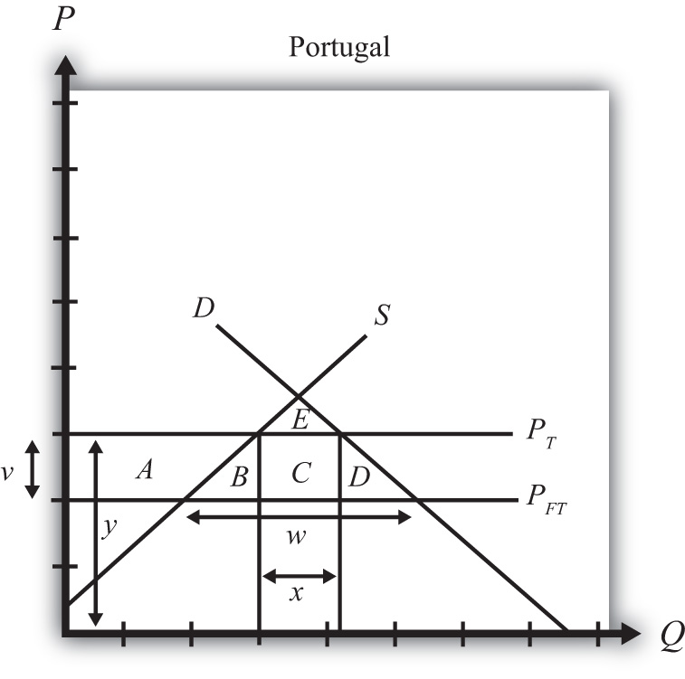The analysis of tariffs in a perfectly competitive market demonstrates that if a large country imposes a relatively small tariff, or if it imposes an optimal tariff, then domestic national welfare will rise but foreign national welfare will fall. The partial equilibrium analysis shows further that national welfare losses to the exporting nation exceed the national welfare gains to the importing nation. The reason is that any tariff set by a large country also reduces world welfare.
If we assume that nations are concerned about the national welfare effects of trade policies, then the tariff analysis provides a rationale for protectionism on the part of large importing nations. However, if large importing nations set optimal tariffs on all or many of their imported goods, the effect internationally will be to reduce the national welfare of its trading partners. If the trade partners are also concerned about their own national welfare, then they would likely find the optimal tariffs objectionable and would look for ways to mitigate the negative effects.
One effective way to mitigate the loss in national welfare, if the trade partners are also large countries, is to retaliate with optimal tariffs on your own imported goods. Thus if country A imports wine, cheese, and wheat from country B, and A places optimal tariffs on imports of these products, then country B could retaliate by imposing optimal tariffs on its imports of, say, lumber, televisions, and machine tools from country A. By doing so, country B could offset its national welfare losses in one set of markets with national welfare gains in another set.
Figure 7.20 A Trade Policy Game

We examine the effects of optimal tariffs and retaliation more formally by using a simple game theory setup. Suppose the players in the game are the governments of two large countries, the United States and Brazil. Suppose the United States imports a set of products (A, B, C, etc.) from Brazil, while Brazil imports a different set of products (X, Y, Z, etc.) from the United States. We imagine that each country’s government must choose between two distinct trade policies, free trade and optimal tariffs. Each policy choice represents a game strategy. If the United States chooses free trade, then it imposes no tariffs on imports of goods A, B, C, and so on. If the United States chooses optimal tariffs, then it determines the optimal tariff in each import market and sets the tariff accordingly. Brazil is assumed to have the same set of policy choices available.
In Figure 7.20 "A Trade Policy Game", U.S. strategies are represented by the two columns; Brazilian strategies correspond to the two rows. The numbers represent the payoffs to the countries, measured as the level of national welfare realized in each country in each of the four possible scenarios. For example, if the United States chooses a free trade policy and Brazil chooses to impose optimal tariffs, then the payoffs are shown in the lower left-hand box. The Brazilian payoff is below the diagonal, while the U.S. payoff is above the diagonal. Thus Brazil gets 120 units of welfare, while the United States gets 70 units.
Note that the size of the numbers used in the example is immaterial, but how they relate to the numbers in alternate boxes is not. We will use the results from the tariff analysis section to inform us about the relationship between the numbers.
To begin, let’s assume that each country receives 100 units of national welfare when both the United States and Brazil choose free trade. If Brazil decides to impose optimal tariffs on all of its imports and the United States maintains its free trade position, then a partial equilibrium welfare analysis suggests the following:
Similarly, if the United States imposes optimal tariffs on all of its imports while Brazil maintains free trade, then the countries will realize the payoffs in the upper right-hand box. The United States would get 120 units of welfare, while Brazil would get 70. To keep the example simple, we are assuming that the effects of tariffs are symmetric. In other words, the effect of U.S. optimal tariffs on the two countries is of the same magnitude as the effects of Brazilian tariffs.
Finally, if both countries set optimal tariffs against each other, then we can simply sum up the total effects. Since each country’s actions raise its own welfare by 20 units and lower its trade partner’s welfare by 30 units, when both countries impose tariffs, national welfare falls to 90 units in each country.
To determine which strategy the two governments would choose in this game, we need to identify the objectives of the players and the degree of cooperation. Initially, we will assume that each government is interested in maximizing its own national welfare and that the governments do not cooperate with each other. Afterward, we will consider the outcome when the governments do cooperate.
A noncooperative solution is a set of strategies such that each country maximizes its own national welfare subject to the strategy chosen by the other country. Thus, in general, if the U.S. strategy (r) maximizes U.S. welfare, when Brazil chooses its strategy (s) and if Brazil’s strategy (s) maximizes Brazil’s welfare when the United States chooses strategy (r), then the strategy set (r,s) is a noncooperative solution to the game. A noncooperative solution is also commonly known as a Nash equilibrium.
One can determine a Nash equilibrium in a simple two-player, two-strategy game by choosing a strategy for one of the players and answering the following series of questions:
Continue this series of questions until neither player switches its strategy. Then this set of strategies is a Nash equilibrium.
In the trade policy game, the Nash equilibriumA game equilibrium in which every player is simultaneously maximizing his own profit given the choices being made by the other players. or noncooperative solution is the set of strategies (optimal tariffs, optimal tariffs). That is, both the United States and Brazil would choose to implement optimal tariffs. Why?
First, suppose the United States chooses the free trade strategy. Brazil’s optimal policy, given the U.S. choice, is to implement optimal tariffs. This is because 120 units of national welfare are greater than 100 units. Second, if Brazil chooses optimal tariffs, then the optimal policy of the United States is optimal tariffs, since 90 units of welfare are greater than 70 units. Finally, if the United States chooses optimal tariffs, then Brazil’s best choice is optimal tariffs since 90 is greater than 70.
A cooperative solution to a game is a set of strategies that would maximize the sum total of the benefits accruing to the players. In some instances, a cooperative outcome may require the transfer of goods or money between players to assure that each player is made better off than under alternative strategy choices. In this game, such a transfer is not required, however.
The cooperative solution in the trade policy game is the set of strategies (free trade, free trade). At this outcome, total world welfare is at a maximum of 200 units.
First of all, notice that in the noncooperative game, each country is acting in its own best interests, yet the outcome is one that is clearly inferior for both countries relative to the cooperative strategy set (free trade, free trade). When both countries set optimal tariffs, each country realizes 90 units of welfare, while if both countries pursued free trade, each country would realizes 100 units of welfare. This kind of result is often referred to as a prisoner’s dilemma outcome. The dilemma is that pursuit of self-interest leads to an inferior outcome for both participants.
However, without cooperation, it may be difficult for the two countries to realize the superior free trade outcome. If both countries begin in free trade, each country has an individual incentive to deviate and implement optimal tariffs. And if either country does deviate, then the other would either suffer the welfare losses caused by the other country’s restrictions or retaliate with tariff increases of its own in order to recoup some of the losses. This scenario in which one country retaliates in response to another’s trade policy could be thought of as a trade war.
This story closely corresponds with events after the Smoot-Hawley Tariff Act was passed in the United States in 1930. The Smoot-Hawley Tariff Act raised tariffs to an average rate of 60 percent on many products imported into the United States. Although it is unlikely that the U.S. government set optimal tariffs, the tariffs nevertheless reduced foreign exports to the United States and injured foreign firms. In response to the U.S. tariffs, approximately sixty foreign nations retaliated and raised their tariffs on imports from the United States. The net effect was a substantial reduction in world trade, which very likely contributed to the length and severity of the Great Depression.
After World War II, the United States and other allied nations believed that high restrictions on trade were detrimental to growth in the world economy. The General Agreement on Tariffs and Trade (GATT) was initiated to promote trade liberalization among its member countries. The method of GATT was to hold multilateral tariff reduction “rounds.” At each round, countries would agree to lower tariffs on imports by a certain average percentage in exchange for a reduction in tariffs by other countries by an equal percentage. Although GATT agreements never achieved a movement to free trade by all member countries, they do represent movements in that direction.
In a sense, then, the GATT represents an international cooperative agreement that facilitates movement toward the free trade strategy set for all countries. If a GATT member nation refuses to reduce its tariffs, then other members refuse to lower theirs. If a GATT member raises its tariffs on some product above the level to which it had previously agreed, then the other member nations are allowed, under the agreement, to retaliate with increases in their own tariffs. In this way, nations have a greater incentive to move in the direction of free trade and a disincentive to take advantage of others by unilaterally raising their tariffs.
The simple prisoner’s dilemma trade policy game therefore offers a simple explanation of the need for international organizations like the GATT or the World Trade Organization (WTO). These agreements may represent methods to achieve cooperative solutions between trading countries.
Jeopardy Questions. As in the popular television game show, you are given an answer to a question and you must respond with the question. For example, if the answer is “a tax on imports,” then the correct question is “What is a tariff?”
Consider the following trade policy game between two small country governments, Kenya and Ethiopia. The policy choices for each government are either to choose free trade on all imports or to place a 15 percent tariff on all imports. The national welfare payoffs for each country when both choose free trade are given as (100, 100). The first 100 is Kenya’s national welfare; the second is Ethiopia’s.
Figure 7.21 A Trade Policy Game

Suppose the United States (US) and Costa Rica (CR) are two countries among many others in the world. The US is a large country and thus its import tariffs will lower the price of CR’s exports. CR, however, is a small country, so its tariffs do not affect prices in the US. Assume the US government can choose free trade, optimal tariffs, or 20 percent tariffs. CR can choose free trade, 10 percent tariffs, or 20 percent tariffs on all imports. The national welfare payoffs for each country in five cases are given. The first term is the US’s national welfare; the second is CR’s.
Figure 7.22 A Trade Policy Game
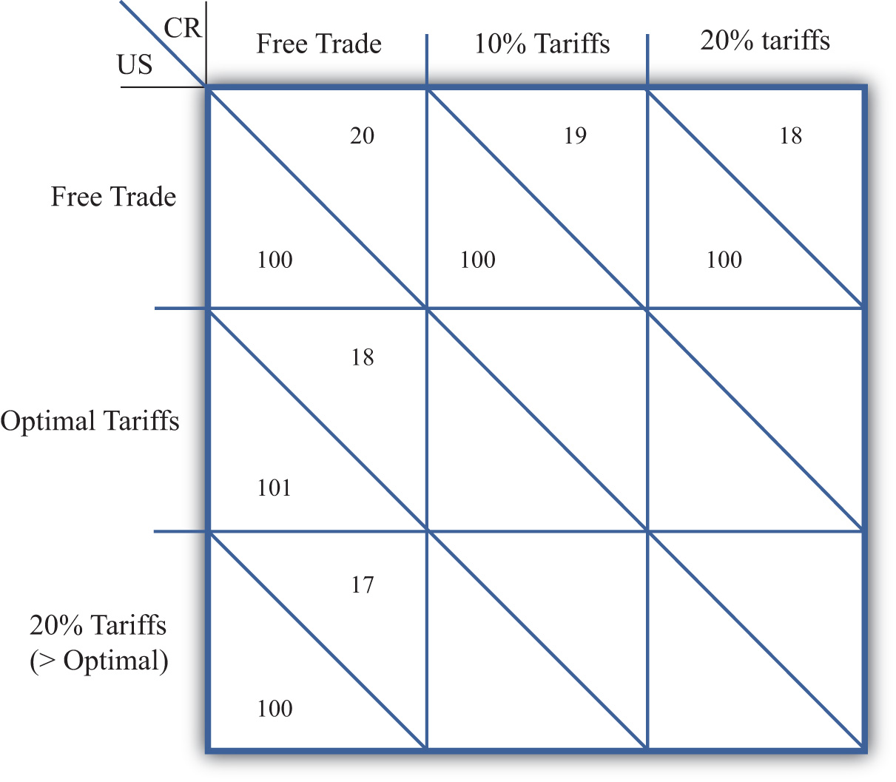Consider the following trade policy game between two large country governments, the US and the EU. The policy choices for each government are to choose either free trade on all imports or to place an optimal tariff on all imports. The national welfare payoffs for each country when both choose free trade are given as (50, 50). The first term is the US’s national welfare; the second is the EU’s.
Figure 7.23 A Trade Policy Game

Suppose Mexico, the importing country in free trade, imposes a binding import quota on wheat. The quota will restrict the flow of wheat across the border. As a result, the supply of wheat to the Mexican market will fall, and if the price remains the same, it will cause excess demand for wheat in the market. The excess demand will induce an increase in the price of wheat. Since wheat is homogeneous and the market is perfectly competitive, the price of all wheat sold in Mexico, both Mexican wheat and U.S. imports, will rise in price. The higher price will, in turn, reduce demand and increase domestic supply, causing a reduction in Mexico’s import demand.
The restricted wheat supply to Mexico will shift supply back to the U.S. market. Since Mexico is assumed to be a large importer, the supply shifted back to the U.S. market will generate excess supply in the U.S. market at the original price and cause a reduction in the U.S. price. The lower price will, in turn, reduce U.S. supply, raise U.S. demand, and cause a reduction in U.S. export supply.
These price effects are identical in direction to the price effects of an import tax, a voluntary export restraint, and an export tax.
A new quota equilibrium will be reached when the following two conditions are satisfied:
and
where is the quantity at which the quota is set, is the price in Mexico after the quota, and is the price in the United States after the quota.
The first condition says that the price must change in Mexico such that import demand falls to the quota level . In order for this to occur, the price in Mexico rises. The second condition says that the price must change in the United States such that export supply falls to the quota level . In order for this to occur, the price in the United States falls.
The quota equilibrium is depicted on the graph in Figure 7.24 "Depicting a Quota Equilibrium: Large Country Case". The Mexican price of wheat rises from PFT to , which is sufficient to reduce its import demand from QFT to . The U.S. price of wheat falls from PFT to , which is sufficient to reduce its export supply from QFT to .
Figure 7.24 Depicting a Quota Equilibrium: Large Country Case

Notice that there is a unique set of prices that satisfies the equilibrium conditions for every potential quota that is set. If the quota were set lower than , the price wedge would rise, causing a further increase in the Mexican price and a further decrease in the U.S. price.
At the extreme, if the quota were set equal to zero, then the prices in each country would revert to their autarky levels. In this case, the quota would prohibit trade.
Jeopardy Questions. As in the popular television game show, you are given an answer to a question and you must respond with the question. For example, if the answer is “a tax on imports,” then the correct question is “What is a tariff?”
When a quantity restriction is set by a government, it must implement procedures to prevent imports beyond the restricted level. A binding import quota will result in a higher price in the import country and, in the case of a large country, a price reduction in the exporter’s market. The price wedge would generate profit opportunities for anyone who could purchase (or produce) the product at the lower price (or cost) in the export market and resell it at the higher price in the import market.
Three basic methods are used to administer import quotas.
Jeopardy Questions. As in the popular television game show, you are given an answer to a question and you must respond with the question. For example, if the answer is “a tax on imports,” then the correct question is “What is a tariff?”
Suppose for simplicity that there are only two trading countries: one importing country and one exporting country. The supply and demand curves for the two countries are shown in Figure 7.25 "Welfare Effects of a Quota: Large Country Case". PFT is the free trade equilibrium price. At that price, the excess demand by the importing country equals the excess supply by the exporter.
Figure 7.25 Welfare Effects of a Quota: Large Country Case

The free trade quantity of imports and exports is shown as the blue line segment on each country’s graph (the horizontal distance between the supply and demand curves at the free trade price). Suppose the large importing country implements a binding quota set equal to the length of the red line segment (the horizontal distance between the supply and demand curves at either the higher import price or the lower export price). When a new equilibrium is reached, the price in the importing country will rise until import demand is equal to the quota level. The price in the exporting country will fall until export supply is equal to the quota level.
Table 7.5 "Welfare Effects of an Import Quota" provides a summary of the direction and magnitude of the welfare effects to producers, consumers, and the governments in the importing and exporting countries. The aggregate national welfare effects and the world welfare effects are also shown.
Table 7.5 Welfare Effects of an Import Quota
| Importing Country | Exporting Country | |
|---|---|---|
| Consumer Surplus | − (A + B + C + D) | + e |
| Producer Surplus | + A | − (e + f + g +h) |
| Quota Rents | + (C + G) | 0 |
| National Welfare | + G − (B + D) | − (f + g + h) |
| World Welfare | − (B + D) − (f + h) |
Refer to Table 7.5 "Welfare Effects of an Import Quota" and Figure 7.25 "Welfare Effects of a Quota: Large Country Case" to see how the magnitude of the changes is represented.
Import quota effects on the importing country’s consumers. Consumers of the product in the importing country suffer a reduction in well-being as a result of the quota. The increase in the domestic price of both imported goods and the domestic substitutes reduces the amount of consumer surplus in the market.
Import quota effects on the importing country’s producers. Producers in the importing country experience an increase in well-being as a result of the quota. The increase in the price of their product on the domestic market increases producer surplus in the industry. The price increases also induce an increase in the output of existing firms (and perhaps the addition of new firms), an increase in employment, and an increase in profit, payments, or both to fixed costs.
Import quota effects on the quota rents. Who receives the quota rents depends on how the government administers the quota.
Import quota effects on the importing country. The aggregate welfare effect for the country is found by summing the gains and losses to consumers, producers, and the recipients of the quota rents. Assume that the quota rent recipients are domestic residents. The net effect consists of three components: a positive terms of trade effect (G), a negative production distortion (B), and a negative consumption distortion (D).
Because there are both positive and negative elements, the net national welfare effect can be either positive or negative. The interesting result, however, is that it can be positive. This means that a quota implemented by a large importing country may raise national welfare.
Generally speaking, the following are true:
However, it is also important to note that not everyone’s welfare rises when there is an increase in national welfare. Instead, there is a redistribution of income. Producers of the product and recipients of the quota rents will benefit, but consumers will lose. A national welfare increase, then, means that the sum of the gains exceeds the sum of the losses across all individuals in the economy. Economists generally argue that, in this case, compensation from winners to losers can potentially alleviate the redistribution problem.
Import quota effects on the exporting country’s consumers. Consumers of the product in the exporting country experience an increase in well-being as a result of the quota. The decrease in their domestic price raises the amount of consumer surplus in the market.
Import quota effects on the exporting country’s producers. Producers in the exporting country experience a decrease in well-being as a result of the quota. The decrease in the price of their product in their own market decreases producer surplus in the industry. The price decline also induces a decrease in output, a decrease in employment, and a decrease in profit, payments, or both to fixed costs.
Import quota effects on the quota rents. There are no quota rent effects on the exporting country as a result of the importer’s quota unless the importing government gives away the quota rights to foreigners. Only in this case would the rents accrue to someone in the exporting country.
Import quota effects on the exporting country. The aggregate welfare effect for the country is found by summing the gains and losses to consumers and producers. The net effect consists of three components: a negative terms of trade effect (g), a negative consumption distortion (f), and a negative production distortion (h).
Since all three components are negative, the importer’s tariff must result in a reduction in national welfare for the exporting country. However, it is important to note that a redistribution of income occurs—that is, some groups gain while others lose. In this case, the sum of the losses exceeds the sum of the gains.
Import quota effects on world welfare. The effect on world welfare is found by summing the national welfare effects on the importing and exporting countries. By noting that the terms of trade gain to the importer is equal to the terms of trade loss to the exporter, the world welfare effect reduces to four components: the importer’s negative production distortion (B), the importer’s negative consumption distortion (D), the exporter’s negative consumption distortion (f), and the exporter’s negative production distortion (h). Since each of these is negative, the world welfare effect of the import quota is negative. The sum of the losses in the world exceeds the sum of the gains. In other words, we can say that an import quota results in a reduction in world production and consumption efficiency.
Consider the following trade policy action (applied by the domestic country) listed at the top of the second column in the table below. In the empty boxes, use the following notation to indicate the effect of the policy on the variables listed in the first column:
+ the variable increases
− the variable decreases
0 the variable does not change
A the variable change is ambiguous (i.e., it may rise, it may fall)
Use a partial equilibrium model to determine the answers, and assume that the shapes of the supply and demand curves are “normal.” Assume that the policy does not begin with, or result in, prohibitive trade policies. Also assume that the policy does not correct for market imperfections or distortions.
For example, an import quota applied by a large country will cause an increase in the domestic price of the import good; therefore a + is placed in the first box of the table.
Table 7.6 Import Quota Effects
| An Import Quota by a Large Country Initially in Free Trade | |
|---|---|
| Domestic Market Price | + |
| Domestic Industry Employment | |
| Domestic Consumer Welfare | |
| Domestic Producer Welfare | |
| Domestic Government Revenue | |
| Domestic National Welfare | |
| Foreign Price | |
| Foreign Consumer Welfare | |
| Foreign Producer Welfare | |
| Foreign National Welfare |
Suppose there are two large countries, the United States and China. Assume that both countries produce and consume clothing. The United States imports clothing from China. Consider the trade policy action listed at the top of the second column in the table below. In the boxes, indicate the effect of the policy on the variables listed in the first column. Use a partial equilibrium, perfect competition model to determine the answers. You do not need to show your work. Use the following notation:
+ the variable increases
− the variable decreases
0 the variable does not change
A the variable change is ambiguous (i.e., it may rise, it may fall)
Table 7.7 Import Quota Elimination Effects
| I | |
|---|---|
| Elimination of a U.S. Import Quota on Clothing Imports | |
| U.S. Domestic Consumer Welfare | |
| U.S. Domestic Producer Welfare | |
| U.S. National Welfare | |
| Chinese Producer Welfare | |
| Chinese Consumer Welfare | |
| Chinese National Welfare |
The small country assumption means that the country’s imports are a very small share of the world market—so small that even a complete elimination of imports would have an imperceptible effect on world demand for the product and thus would not affect the world price. Thus when a quota is implemented by a small country, there is no effect on the world price.
To depict the price effects of a quota, we use an export supply/import demand diagram shown in Figure 7.26 "Depicting a Quota Equilibrium: Small Country Case". The export supply curve is drawn as a horizontal line since the exporting country is willing to supply as much as the importer demands at the world price. The small importing country takes the world price as exogenous since it can have no effect on it.
Figure 7.26 Depicting a Quota Equilibrium: Small Country Case
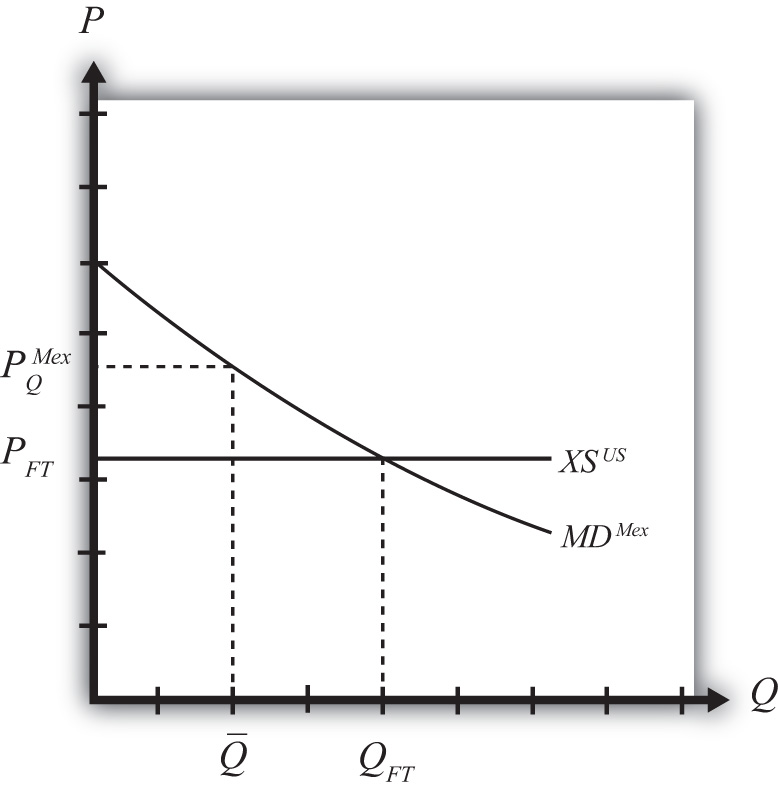When the quota is placed on imports, it restricts supply to the domestic market since fewer imports are allowed in. The reduced supply raises the domestic price. The world price is unaffected by the quota and remains at the free trade level. In the final equilibrium, two conditions must hold—the same two conditions as in the case of a large country, namely,
and
This implies that, in the case of a small country, the price of the import good in the importing country must rise to the level at which the import demand is equal to the quota level. Export supply merely falls to the lower level now demanded.
Jeopardy Questions. As in the popular television game show, you are given an answer to a question and you must respond with the question. For example, if the answer is “a tax on imports,” then the correct question is “What is a tariff?”
Consider a market in a small importing country that faces an international or world price of PFT in free trade. The free trade equilibrium is depicted in Figure 7.27 "Welfare Effects of a Quota: Small Country Case", where PFT is the free trade equilibrium price. At that price, domestic demand is given by DFT, domestic supply by SFT, and imports by the difference, DFT − SFT (the blue line in the figure).
Suppose an import quota is set below the free trade level of imports. A reduction in imports will lower the supply on the domestic market and raise the domestic price. In the new equilibrium, the domestic price will rise to the level at which import demand equals the value of the quota. Since the country is small, there will be no effect on the world price, which will remain at PFT.
In Figure 7.27 "Welfare Effects of a Quota: Small Country Case", if the quota is set equal to (the red line segment), then the price will have to rise to PQ.
Figure 7.27 Welfare Effects of a Quota: Small Country Case

Table 7.8 "Welfare Effects of an Import Tariff" provides a summary of the direction and magnitude of the welfare effects to producers, consumers, and the recipients of the quota rents in the importing country. The aggregate national welfare effects are also shown.
Table 7.8 Welfare Effects of an Import Tariff
| Importing Country | |
|---|---|
| Consumer Surplus | − (A + B + C + D) |
| Producer Surplus | + A |
| Quota Rents | + C |
| National Welfare | − B − D |
Refer to Table 7.8 "Welfare Effects of an Import Tariff" and Figure 7.27 "Welfare Effects of a Quota: Small Country Case" to see how the magnitudes of the changes are represented.
Welfare effects on the importing country’s consumers. Consumers of the product in the importing country are worse off as a result of the quota. The increase in the domestic price of both imported goods and the domestic substitutes reduces consumer surplus in the market.
Welfare effects on the importing country’s producers. Producers in the importing country are better off as a result of the quota. The increase in the price of their product increases producer surplus in the industry. The price increase also induces an increase in the output of existing firms (and perhaps the addition of new firms), an increase in employment, and an increase in profit, payments, or both to fixed costs.
Welfare effects on the quota rents. Who receives the quota rents depends on how the government administers the quota.
Welfare effects on the importing country. The aggregate welfare effect for the country is found by summing the gains and losses to consumers, producers, and the domestic recipients of the quota rents. The net effect consists of two components: a negative production efficiency loss (B) and a negative consumption efficiency loss (D). The two losses together are referred to as “deadweight losses.”
Because there are only negative elements in the national welfare change, the net national welfare effect of a quota must be negative. This means that a quota implemented by a small importing country must reduce national welfare.
Generally speaking, the following are true:
Consider the following trade policy action (applied by the domestic country) listed along the top row of the table below. In the boxes, indicate the effect of the policy on the variables listed in the first column. Use a partial equilibrium model to determine the answers. You do not need to show your work. Assume that the policy does not begin with, or result in, prohibitive trade policies. Also assume that the policy does not correct for market imperfections or distortions. Use the following notation:
+ the variable increases
− the variable decreases
0 the variable does not change
A the variable change is ambiguous (i.e., it may rise, it may fall)
Table 7.9 Import Quota Effects
| Import Quota (Administered by Giving Away Quota Tickets) by a Small Country | |
|---|---|
| Domestic Price | |
| Domestic Consumer Welfare | |
| Domestic Producer Welfare | |
| Domestic Government Revenue | |
| Domestic National Welfare | |
| Foreign Price | |
| Foreign Consumer Welfare | |
| Foreign Producer Welfare | |
| Foreign National Welfare |
There are two basic ways to provide protection to domestic import-competing industries: a tariff or a quota. The choice between one or the other is likely to depend on several concerns.
One concern is the revenue effects. A tariff has an immediate advantage for governments in that it will automatically generate tariff revenue (assuming the tariff is not prohibitive). Quotas may or may not generate revenue depending on how the quota is administered. If a quota is administered by selling quota tickets (i.e., import rights), then a quota will generate government revenue; however, if the quota is administered on a first-come, first-served basis or if quota tickets are given away, then no revenue is collected.
Administrative costs of tariffs and quotas are also likely to differ. Tariff collection involves product identification, collection, and processing of fees. Quota administration will also involve product identification and some method of keeping track of, or counting, the product as it enters the country in multiple ports of entry. It may also involve some method of auctioning or disbursing quota tickets. It is not obvious which of these two procedures would be less costly, although a good guess would be tariff collection.
Perhaps the most important distinction between the two policies, however, is the protective effect the policy has on the import-competing industries. In one sense, quotas are more protective of the domestic industry because they limit the extent of import competition to a fixed maximum quantity. The quota provides an upper bound to the foreign competition the domestic industries will face. In contrast, tariffs simply raise the price but do not limit the degree of competition or trade volume to any particular level.
In the original General Agreement on Tariffs and Trade (GATT), a preference for the application of tariffs rather than quotas was introduced as a guiding principle. One reason was the sense that tariffs allowed for more market flexibility and thus could be expected to be less protective over time. Another reason concerned transparency. With a quota in place, it is very difficult to discern the degree to which a market is protected since it can be difficult to measure how far the quota is below the free trade import level. With a tariff in place, especially an ad valorem tariff, one can use the tariff percentage as a measure of the degree of protection.
Also, it was considered somewhat easier to negotiate reductions in tariff rates than quota increases during GATT rounds of trade liberalization. Again, the issue of transparency arises. Trade liberalization agreements generally target a fixed percentage for tariff reductions. For example, countries might agree to reduce average tariffs by 30 percent from their current levels. This rule would be perceived as being equal reciprocation in that each country would be liberalizing to the same degree. Hence the agreement could be judged to be fair. However, with quotas in place, it would be difficult, if not impossible, to apply such a straightforward type of fairness principle.
For this reason, current World Trade Organization (WTO) member countries agreed in the Uruguay Round to phase out the use of quotas, used primarily in agriculture industries. Instead, countries will apply tariffs that are equivalent in their market effects to the original quotas. This adjustment is referred to as tariffication. In this way, future rounds of trade liberalization negotiations will be able to use fair reciprocal concessions to bring these tariffs down further.
One of the main concerns in choosing between tariffs or quotas is the protective effect of the policy. Although tariffs and quotas are generally equivalent to each other in terms of their static price and welfare effects, this equivalence does not remain true in the face of market changes. In the next sections we consider three such market changes: an increase in domestic demand, an increase in domestic supply, and a decrease in the world price. In each case, we compare the protective effects of a tariff and a quota for the domestic import-competing industries.
Consider Figure 7.28 "Effects of a Demand Increase", which depicts a small importing country. PFT is the free trade price. If a tariff of T is put into place, the domestic price rises to PT and imports equal DT − ST. A quota set equal to QT (the blue line segment) would generate the same increase in price to PT and the same level of imports. Thus the tariff T and quota QT are said to be equivalent to each other.
Figure 7.28 Effects of a Demand Increase

Next, consider the effects in this market when there is an increase in domestic demand, represented by a rightward shift of the demand curve. A demand increase could arise because of rising incomes in the country or because consumers’ preferences become more favorable to this product.
With a tariff in place initially, the increase in domestic demand will leave the domestic price unaffected. Because this is a small country, the world price does not change and thus the domestic tariff-inclusive price remains at PT = PFT + T. Domestic supply also remains at ST, but demand rises to D′T, causing an increase in imports to D′T − ST.
With a quota in place initially, the increase in domestic demand causes the domestic price to rise to PQ in order to maintain the import level at QT (the higher blue line segment). Domestic supply will rise with the increase in price (not labeled), while domestic demand will fall.
The protective effect of the tariff or quota means the degree to which the domestic producers are protected in the face of the market change. Since the domestic price rises more with the quota in place than with the tariff, domestic producers will enjoy a larger supply and consequently a higher level of producer surplus (not shown). Thus the quota is more protective than a tariff in the face of an increase in domestic demand.
Again, consider a small importing country. In Figure 7.29 "Effects of a Supply Increase", PFT is the free trade price. If a tariff of T is put into place, the domestic price rises to PT and imports equal DT − ST. A quota set equal to QT (the blue line segment) would generate the same increase in price to PT and the same level of imports. Thus the tariff T and quota QT are said to be equivalent to each other.
Figure 7.29 Effects of a Supply Increase
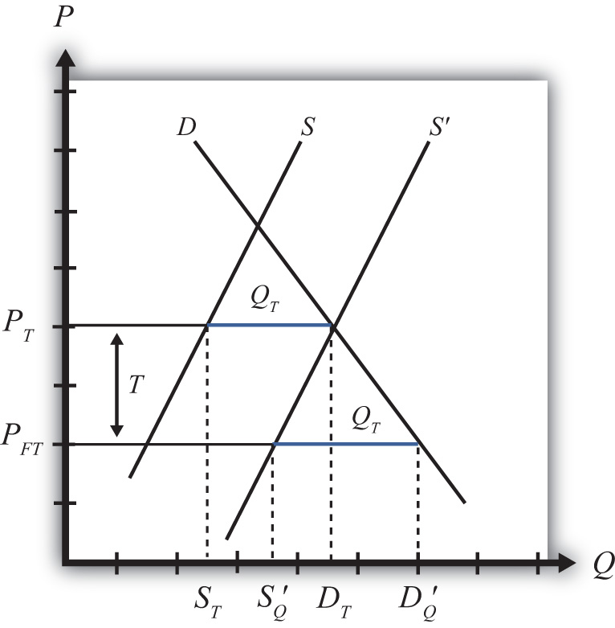Next, consider the effects in this market when there is an increase in domestic supply, represented by a rightward shift of the supply curve. A supply increase could arise because of falling production costs or due to improvements in productivity.
With a tariff in place initially, the increase in domestic supply will leave the domestic price unaffected. Because this is a small country, the world price does not change and thus the domestic tariff-inclusive price remains at PT = PFT + T. However, because domestic supply is now higher at every price, at the price PT, supply equals domestic demand of DT. This means that with the tariff, imports are reduced to zero.
With a quota in place initially, the increase in domestic supply causes the domestic price to fall back to the free trade level in order to maintain the import level at the level QT (the lower blue line segment). Domestic supply will rise to S′Q with the decrease in price, while domestic demand also will rise to D′Q.
Since the domestic price rises more with the tariff in place than with the quota, domestic producers will enjoy a larger supply (DT vs. S′Q) and consequently a higher level of producer surplus (not shown). Thus the tariff is more protective than a quota in the face of an increase in domestic supply.
Again, consider a small importing country. In Figure 7.30 "Effects of a World Price Decrease", PFT is the free trade price. If a tariff of T is put into place, the domestic price rises to PT and imports equal DT − ST. A quota set equal to QT (the blue line segment) would generate the same increase in price to PT and the same level of imports. Thus the tariff T and quota QT are said to be equivalent to each other.
Figure 7.30 Effects of a World Price Decrease
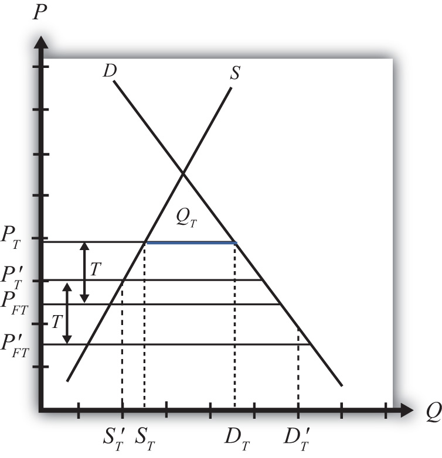Next, consider the effects in this market when there is a decrease in the world free trade price, represented by a downward shift from PFT to P′FT. The world price could fall because of falling world production costs or due to improvements in foreign productivity.
With a tariff in place initially, the decrease in the world price will cause a reduction in the domestic price. Because this is a small country, when the world price falls, the domestic tariff-inclusive price also falls to P′T = P′FT + T. With the lower price, domestic supply falls to S′T, while domestic demand rises to D′T. This means that with the tariff in place, imports rise to D′T − S′T.
With a quota in place initially, the decrease in the world free trade price has no effect on the domestic price. The domestic price remains at PT since this is the only price that will support the quota QT.
Since the domestic price is higher with the quota in place than with the tariff, domestic producers will enjoy a larger supply (ST vs. S′T) and consequently a higher level of producer surplus (not shown). Thus the quota is more protective than a tariff in the face of a decrease in the world free trade price.
What we can conclude from the three examples above is that when market conditions change such that imports increase, a quota is more protective than a tariff. This will occur if domestic demand increases, domestic supply decreases, the world price falls, or if some combination of these things occur.
In situations where market changes cause a decrease in imports, a tariff is more protective than a quota. This occurs if domestic demand falls, domestic supply rises, the world price rises, or some combination of these changes occurs.
Since protection is often provided due to the insistence of the domestic import-competing industries—rather than a more comprehensive concern for the general welfare of the country—and since import-competing firms are generally more concerned about situations where imports may increase, industry preferences usually favor quotas over tariffs since quotas will be more protective in these situations. Other government concerns, such as revenue needs, ease of administration, or participation in trade agreements like the GATT/WTO, which contain a preference of tariffs over quotas, have resulted in the widespread application of tariffs rather than quotas in most instances.
Draw a diagram depicting a small importing country with a nonprohibitive import tariff (T) in place. On the diagram indicate the tariff rate and the equivalent import quota (Q) that would generate the same domestic price.
Next, suppose there is a decrease in domestic demand for the good.
Draw a diagram depicting a small importing country with a nonprohibitive import tariff (T) in place. On the diagram indicate the tariff rate and the equivalent import quota (Q) that would generate the same domestic price.
Next, suppose there is an increase in the world price of the good.
Suppose the United States, the exporting country in free trade, implements a specific export subsidy on exports of wheat. A subsidy to exports will encourage the flow of wheat across the border. It will now cost less to move the product from the United States into Mexico.
As a result, the supply of wheat to the Mexican market will rise, causing a decrease in the price of wheat. Since the United States is assumed to be a large country, the price of all wheat sold in Mexico, both Mexican wheat and U.S. imports, will fall in price. The lower price will raise Mexico’s import demand.
The higher wheat supply to Mexico will reduce supply in the U.S. market and induce an increase in the U.S. price. The higher price will raise U.S. export supply.
A new subsidy-ridden equilibrium will be reached when the following two conditions are satisfied:
and
where S is the specific export subsidy, is the price in Mexico after the subsidy, and is the price in the United States after the subsidy. The first condition represents a price wedge between the final U.S. price and the Mexican price equal to the amount of the export subsidy. The prices must differ by the subsidy because U.S. suppliers of wheat must receive the same price for their product, regardless of whether the product is sold in the United States or Mexico, and all wheat sold in Mexico must be sold at the same price. Since a subsidy is paid to U.S. exporters, the only way for these price equalities within countries to arise is if the price differs across countries by the amount of the subsidy.
The second condition states that the amount the United States wants to export at its new higher price must be equal to the amount Mexico wants to import at its new lower price. This condition guarantees that world supply of wheat equals world demand for wheat.
The export subsidy equilibrium is depicted graphically in Figure 7.31 "Depicting a Subsidy Equilibrium: Large Country Case". The Mexican price of wheat falls from PFT to , which raises its import demand from QFT to QS. The Mexican price of wheat falls from PFT to , which raises its import demand from QFT to QS. The U.S. price of wheat rises from PFT to , which raises its export supply also from QFT to QS. The difference in the prices between the two markets is equal to the export subsidy rate S.
Figure 7.31 Depicting a Subsidy Equilibrium: Large Country Case
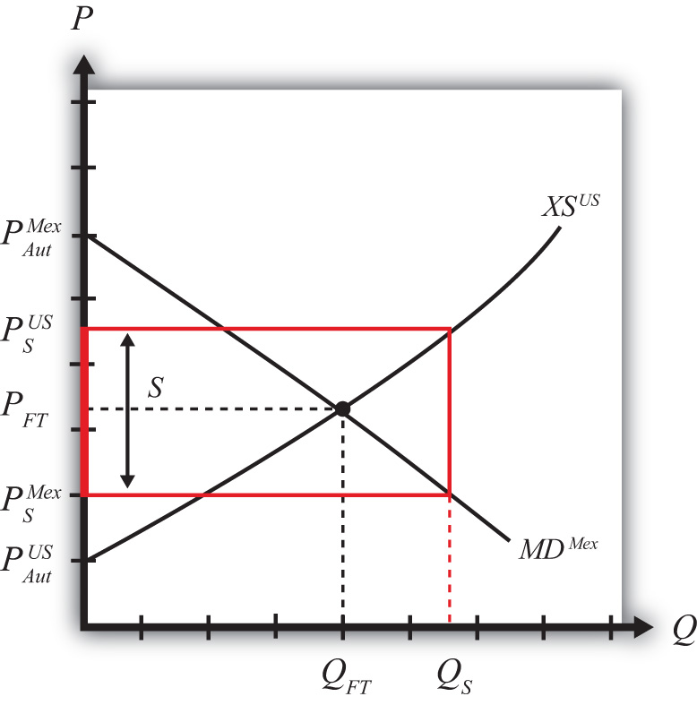Jeopardy Questions. As in the popular television game show, you are given an answer to a question and you must respond with the question. For example, if the answer is “a tax on imports,” then the correct question is “What is a tariff?”
Suppose that there are only two trading countries: one importing country and one exporting country. The supply and demand curves for the two countries are shown in Figure 7.32 "Welfare Effects of a Subsidy: Large Country Case". PFT is the free trade equilibrium price. At that price, the excess demand by the importing country equals the excess supply by the exporter.
Figure 7.32 Welfare Effects of a Subsidy: Large Country Case
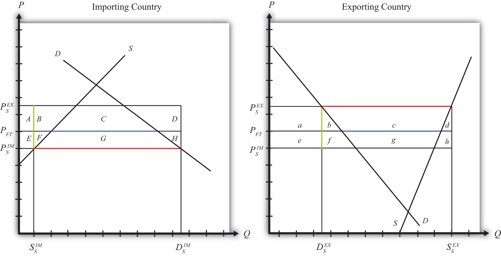The quantity of imports and exports is shown as the blue line segment on each country’s graph (the horizontal distance between the supply and demand curves at the free trade price). When a large exporting country implements an export subsidy, it will cause an increase in the price of the good on the domestic market and a decrease in the price in the rest of the world (RoW). Suppose after the subsidy the price in the importing country falls to and the price in the exporting country rises to . If the subsidy is a specific subsidy, then the subsidy rate would be , equal to the length of the green line segment in Figure 7.32 "Welfare Effects of a Subsidy: Large Country Case".
Table 7.10 "Welfare Effects of an Export Subsidy" provides a summary of the direction and magnitude of the welfare effects to producers, consumers, and the governments in the importing and exporting countries. The aggregate national welfare effects and the world welfare effects are also shown.
Table 7.10 Welfare Effects of an Export Subsidy
| Importing Country | Exporting Country | |
|---|---|---|
| Consumer Surplus | + (E + F + G) | − (a + b) |
| Producer Surplus | − (E + F) | + (a + b + c) |
| Govt. Revenue | 0 | − (b + c + d + f + g + h) |
| National Welfare | + G | − (b + d + f + g + h) |
| World Welfare | − (F + H) − (b + d) |
Refer to Table 7.10 "Welfare Effects of an Export Subsidy" and Figure 7.32 "Welfare Effects of a Subsidy: Large Country Case" to see how the magnitudes of the changes are represented.
Export subsidy effects on the exporting country’s consumers. Consumers of the product in the exporting country experience a decrease in well-being as a result of the export subsidy. The increase in their domestic price lowers the amount of consumer surplus in the market.
Export subsidy effects on the exporting country’s producers. Producers in the exporting country experience an increase in well-being as a result of the subsidy. The increase in the price of their product in their own market raises producer surplus in the industry. The price increase also induces an increase in output, an increase in employment, and an increase in profit, payments, or both to fixed costs.
Export subsidy effects on the exporting country’s government. The government must pay the subsidy to exporters. These payments must come out of the general government budget. Who loses as a result of the subsidy payments depends on how the revenue is collected. If there is no change in total spending when the subsidy payments are made, then a reallocation of funds implies that funding to some other government program is reduced. If the subsidy is funded by raising tax revenues, then the individuals responsible for the higher taxes lose out. If the government borrows money to finance the subsidy payments, then the budget cut or the tax increase can be postponed until some future date. Regardless of how the subsidy is funded, however, someone in the domestic economy must ultimately pay for it.
Export subsidy effects on the exporting country. The aggregate welfare effect for the country is found by summing the gains and losses to consumers and producers. The net effect consists of three components: a negative terms of trade effect (f + g + h), a negative consumption distortion (b), and a negative production distortion (d).
Since all three components are negative, the export subsidy must result in a reduction in national welfare for the exporting country. However, it is important to note that a redistribution of income occurs—that is, some groups gain while others lose. The likely reason governments implement export subsidies is because they will benefit domestic exporting firms. The concerns of consumers must be weighed less heavily in their calculation since the sum of their losses exceeds the sum of the producers’ gains.
Export subsidy effects on the importing country’s consumers. Consumers of the product in the importing country experience an increase in well-being as a result of the export subsidy. The decrease in the price of both imported goods and the domestic substitutes increases the amount of consumer surplus in the market.
Export subsidy effects on the importing country’s producers. Producers in the importing country suffer a decrease in well-being as a result of the export subsidy. The decrease in the price of their product on the domestic market reduces producer surplus in the industry. The price decrease also induces a decrease in the output of existing firms, a decrease in employment, and a decrease in profit, payments, or both to fixed costs.
Export subsidy effects on the importing country’s government. There is no effect on the importing country’s government revenue as a result of the exporter’s subsidy.
Export subsidy effects on the importing country. The aggregate welfare effect for the country is found by summing the gains and losses to consumers, producers, and the government. The net effect consists of three components: a positive terms of trade effect (F + G + H), a negative production distortion (F), and a negative consumption distortion (H).
Although there are both positive and negative elements, the net national welfare effect reduces to area G, which is positive. This means that an export subsidy implemented by a large exporting country in a perfectly competitive market will raise national welfare in the importing country.
This result has inspired some economists to argue that the proper response for an importing country when its trading partner implements an export subsidy is simply to send along a thank you note.
It is worth noting here that the World Trade Organization (WTO) allows countries to impose countervailing duties to retaliate against its trading partners when it can be shown that an exporting country’s government has used export subsidies.
It is also important to note that not everyone’s welfare rises when there is an increase in national welfare. Instead, there is a redistribution of income. Consumers of the product will benefit, but producers and payers of government taxes will lose. A national welfare increase, then, means that the sum of the gains exceeds the sum of the losses across all individuals in the economy. Economists generally argue that, in this case, compensation from winners to losers can potentially alleviate the redistribution problem.
Export subsidy effects on world welfare. The effect on world welfare is found by summing the national welfare effects on the importing and exporting countries. By noting that the terms of trade gain to the exporter is equal to the terms of trade loss to the importer, the world welfare effect reduces to four components: the importer’s negative production distortion (B), the importer’s negative consumption distortion (D), the exporter’s negative consumption distortion (f), and the exporter’s negative production distortion (h). Since each of these is negative, the world welfare effect of the export subsidy is negative. The sum of the losses in the world exceeds the sum of the gains. In other words, we can say that an export subsidy results in a reduction in world production and consumption efficiency.
Consider the following trade policy action (applied by the domestic country) listed along the top row of the table below. In the empty boxes, use the following notation to indicate the effect of the policy on the variables listed in the first column:
+ the variable increases
− the variable decreases
0 the variable does not change
A the variable change is ambiguous (i.e., it may rise, it may fall)
Use a partial equilibrium model to determine the answers and assume that the shapes of the supply and demand curves are “normal.” Assume that the policy does not begin with, or result in, prohibitive trade policies. Also assume that the policy does not correct for market imperfections or distortions.
For example, an export subsidy applied by a large country will cause an increase in the domestic price of the export good; therefor a + is placed in the first box of the table.
Table 7.11 Export Subsidy Effects
| Export Subsidy by a Large Country | |
|---|---|
| Domestic Market Price | + |
| Domestic Industry Employment | |
| Domestic Consumer Welfare | |
| Domestic Producer Welfare | |
| Domestic Government Revenue | |
| Domestic National Welfare | |
| Foreign Price | |
| Foreign Consumer Welfare | |
| Foreign Producer Welfare | |
| Foreign National Welfare |
The World Trade Organization (WTO) allows countries to implement antisubsidy legislation. The law allows a country to place a countervailing duty (CVD)A tariff on a product levied against a country that subsidizes the export of that product and that causes injury to the import-competing industry. on imports when a foreign government subsidizes exports of the product, which in turn causes injury to the import-competing firms. The countervailing duty is a tariff designed to “counter” the effects of the foreign export subsidy. The purpose of this section is to explain the effects of a countervailing duty in a perfectly competitive market setting. See Chapter 1 "Introductory Trade Issues: History, Institutions, and Legal Framework", Section 1.5 "The General Agreement on Tariffs and Trade (GATT)" for a more complete description of the antisubsidy law.
We will assume that there are two large countries trading a particular product in a partial equilibrium model. The exporting country initially sets a specific export subsidy. That action is countered with a CVD implemented by the importing country. We will first describe the effects of the export subsidy (which will closely mimic the analysis in Chapter 7 "Trade Policy Effects with Perfectly Competitive Markets", Section 7.16 "Export Subsidies: Large Country Price Effects" and Chapter 7 "Trade Policy Effects with Perfectly Competitive Markets", Section 7.17 "Export Subsidies: Large Country Welfare Effects", after which we will consider the effects of the CVD action in response.
An export subsidy will reduce the price of the good in the import market and raise the price of the good in the export market relative to the free trade price. After the subsidy is imposed, the following two conditions will describe the new equilibrium:
and
where S is the specific export subsidy, is the price that prevails in the import market after the subsidy, and is the price that prevails in the export market after the subsidy. The first condition means that prices in the two countries must differ by the amount of the subsidy. The second condition means that export supply at the price that now prevails in the export market must equal import demand at the price that prevails in the import market.
The effects of the subsidy are depicted in Figure 7.33 "Depicting an Export Subsidy and a CVD". The initial free trade price is labeled PFT. In free trade, the exporting country exports (S0EX − D0EX) and the importing country imports (D0IM − S0IM). Since there are only two countries in the model, free trade exports are equal to imports and are shown as the blue line segments in the diagram. When the subsidy is imposed, the price in the export market rises to PSEX, while the price in the import market falls to PSIM. The higher level of exports with the subsidy, given by (S1EX − D1EX), is equal to imports, given by (D1IM − S1IM), and is depicted by the red line segments in Figure 7.30 "Effects of a World Price Decrease".
Figure 7.33 Depicting an Export Subsidy and a CVD
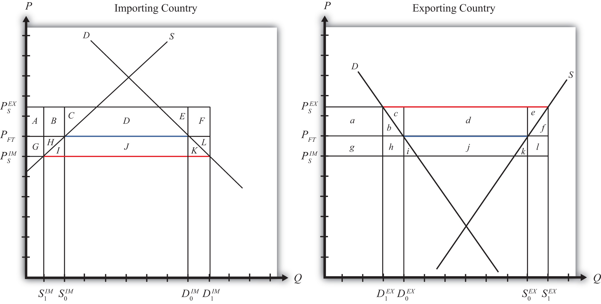Table 7.12 "Welfare Effects of the Initial Export Subsidy" provides a summary of the direction and magnitude of the welfare effects to producers, consumers, and the governments in the importing and exporting countries as a result of the subsidy. The aggregate national welfare effects and the world welfare effects are also shown.
Table 7.12 Welfare Effects of the Initial Export Subsidy
| Importing Country | Exporting Country | |
|---|---|---|
| Consumer Surplus | + (G + H + I + J + K) | − (a + b) |
| Producer Surplus | − (G + H) | + (a + b + c + d + e) |
| Govt. Revenue | 0 | − (b + c + d + e + f + h + i + j + k + l) |
| National Welfare | + I + J + K | − (b + f + h + i + j + k + l) |
| World Welfare | − (I + K) − (b + f) |
Table 7.12 "Welfare Effects of the Initial Export Subsidy" shows that in the case of a large exporting country, the export producers benefit from the subsidy, while the consumers of the product in the exporting country lose. Because of the cost of the subsidy to the exporting country government, which must ultimately be paid by the taxpayers, the net national welfare effect for the exporting country is negative.
The importing country also experiences an income redistribution. The consumers in the importing country benefit from the foreign subsidy, while import-competing producers suffer losses. The net effect for the importing country is positive since the gains to consumers outweigh the losses to producers.
The world welfare effects of the export subsidy are also negative.
Despite the fact that the export subsidy generates net benefits for the importing country, the importing country is allowed under WTO rules to protect itself from these benefits. A CVD may be placed if it can be shown that a subsidy is indeed in place and if the subsidy causes injury to the import-competing firms.
It is worth emphasizing that the antisubsidy law, in this case, does not protect the “country,” nor does it protect consumers. The law is designed to aid import firms exclusively. No evaluation of the effects on consumers and no evaluation of the national welfare effects are required by the law. The only requirement is that injury be caused to the import-competing firms.
In this simple example of a large country implementing an export subsidy, injury would indeed be apparent. The export subsidy lowers the price of the good in the import market in this model and causes an increase in imports from abroad. Supply by the import-competing firms would fall (from S0IM to S1IM in Figure 7.33 "Depicting an Export Subsidy and a CVD"). Producer surplus, indicating a reduction in industry profits, would also fall. Since less output would be produced by the import-competing industry, the industry would need fewer factors of production. This would likely mean a reduction in the number of workers employed in the industry. In the adjustment process, firms in the industry may lay off workers and close factories. All these effects are valid criteria used to judge injury in CVD cases.
So let’s consider the effects of a countervailing duty in response to the export subsidy described above. A CVD is simply a tariff set on imports to counter the effects of the foreign export subsidy. CVD laws require that the size of the CVD be just enough to offset the effects of the export subsidy. In the United States, the U.S. International Trade Administration determines the size of the foreign subsidy. If a CVD action is taken, the CVD is set equal to the foreign subsidy.
So imagine that the importing country now sets a specific CVD (t) equal to the original export subsidy (S). As with any tariff set by a large importing country, the tariff will cause the price in the importing country to rise and the price in the exporting country to fall. What’s different from the standard tariff analysis is that the prices in this case are not equal to each other. Instead, the price in the import market begins lower—by the amount of the export subsidy, S—than the price in the export market. The CVD, then, will drive the prices in the two markets back together.
The final equilibrium must satisfy the following two conditions:
and
However, since t = S, the first condition reduces to . This means that in the final equilibrium, the prices must be equal in both countries and export supply must be equal to import demand. These conditions are satisfied only at the free trade price.
Thus the effect of the CVD is to force the prices in the two markets back to the free trade prices.
As a result, imports will fall in the importing country (back to D0IM − S0IM in Figure 7.33 "Depicting an Export Subsidy and a CVD"), domestic supply will rise (from S1IM to S0IM), employment in the import-competing industry will rise, and producer surplus in the industry will also rise. Thus the CVD will be effective in eliminating the injury caused to import-competing firms.
But let’s also take a look at the overall welfare effects of the CVD, assuming, as is often the case, that the CVD and the export subsidy remain in place. There are two ways to consider the effects of the CVD. We can look at the effects relative to when just the export subsidy was in place. Or we can look at the effects relative to when there was no export subsidy and no CVD. We’ll do it both ways.
First, let’s consider the welfare effects of the CVD relative to when the export subsidy alone was in place. These effects are summarized in Table 7.13 "Welfare Effects of a CVD".
Table 7.13 Welfare Effects of a CVD
| Importing Country | Exporting Country | |
|---|---|---|
| Consumer Surplus | − (G + H + I + J + K) | + (a + b) |
| Producer Surplus | + (G + H) | − (a + b + c + d + e) |
| Govt. Revenue | + (C + D + E + J) | + (b + c + e + f + h + l) |
| National Welfare | + (C + D + E) − (I + K) | + (b + f + h + l) − (d) |
| World Welfare | + (b + f + h + l) − (I + K) = | b + f + I + K |
Note that the effects on consumers and producers in both countries are equal and opposite to the effects of the export subsidy. Thus producers in the import-competing industry gain in surplus from the CVD exactly what they had lost as a result of the foreign export subsidy. Consumers in the import industry lose from the CVD, producers in the exporting country lose, and consumers in the exporting country gain.
The importing government now collects tariff revenue from the CVD, which benefits someone in the importing country. The exporting government, however, experiences a reduction in its subsidy expenditures. This occurs because the CVD reduces trade and thus reduces the number of units exported. As a result, the government (i.e., the taxpayers) in the exporting country benefits from the CVD.
The national welfare effects in both countries are ambiguous in general. In the importing country, a terms of trade gain may outweigh two deadweight losses and cause national welfare to rise even further. Interestingly, the export subsidy and the CVD may each raise welfare for the importing country. In the export country, the net national welfare effect may be positive or negative.
The world welfare effects are found by summing the national welfare effects on both countries. The expression is simplified first by noting that area (C + D + E) = area (d) and second by noting that area (h) = twice area I, or (2I), and area (l) = area (2K). The final expression shows that world welfare will rise as a result of the CVD.
Next, let’s consider the welfare effects of the export subsidy and the CVD combined. In this case, we compare the welfare status of each country after both policies are in place relative to when neither policy is imposed. The effects can be calculated either by summing the individual welfare effects of each of the two stages depicted above or by noting that prices have not changed from the initial presubsidy state to the final post-CVD state but that the governments do have expenditures and receipts, respectively.
The welfare effects are summarized in Table 7.14 "Welfare Effects of an Export Subsidy plus a CVD".
Table 7.14 Welfare Effects of an Export Subsidy plus a CVD
| Importing Country | Exporting Country | |
|---|---|---|
| Consumer Surplus | 0 | 0 |
| Producer Surplus | 0 | 0 |
| Govt. Revenue | + (C + D + E + J) | − (d + i + j + k) |
| National Welfare | + (C + D + E + J) | − (d + i + j + k) |
| World Welfare | 0 |
Since the prices in each country after the CVD are the same as prices before the export subsidy, there is ultimately no change in producer or consumer surplus in either country. Everyone participating in the market is left as well off as they were at the start.
However, since the exporting country maintains the export subsidy and the import country maintains the CVD, there are government revenue effects. In the exporting country, the government continues to make expenditures for the export subsidy. This represents a cost to the country’s taxpayers that does not even generate the intended benefit for the export industry. In the importing country, the government collects tariff revenue as a result of the CVD. This generates benefits to the recipients of the resulting additional government spending.
The net national welfare effect in each country is the same as the government effects. This means that the importing country benefits from the export subsidy plus CVD, while the exporting country loses from the combined policies.
The world welfare effect of the combined policies is neutral. This means that the exporting country loses exactly the same amount as the importing country gains. The ultimate effect of the export subsidy plus the CVD is that the exporting country’s government transfers money to the importing country’s government with consumers and producers left unaffected. In practice, exporting country producers receive an export subsidy payment from their government when their product leaves the port bound for the importing country. When the product arrives, the importing country’s government collects a tariff (or a CVD) exactly equal to the subsidy payment. Thus the export firms turn over the extra monies they had just received from their own government to the government of the importing country.
These effects described here hold only for markets that are perfectly competitive. If the markets are oligopolistic, or contain market imperfections or other distortions, then the effects of the export subsidy and CVD may differ.
Jeopardy Questions. As in the popular television game show, you are given an answer to a question and you must respond with the question. For example, if the answer is “a tax on imports,” then the correct question is “What is a tariff?”
Consider a market for computers in two large countries. Suppose the exporting country imposes a specific export subsidy equal to PH − PL. Afterward, the importing country retaliates with a countervailing duty also set equal to PH − PL. Use the diagram below to answer the following questions.
Figure 7.34 Two Large Trading Countries

Suppose the United States, an exporting country in free trade, imposes a binding export quota, often called a voluntary export restraint (VER) when implemented bilaterally, on wheat exports to Mexico. The VER will restrict the flow of wheat across the border. Since the United States is a large exporter, the supply of wheat to the Mexican market will fall, and if the price remained the same it would cause excess demand for wheat in the market. The excess demand will induce an increase in the price of wheat. Since wheat is homogeneous and the market is perfectly competitive, the price of all wheat sold in Mexico, both Mexican wheat and U.S. imports, will rise in price. The higher price will, in turn, reduce demand and increase domestic supply, causing a reduction in Mexico’s import demand.
The restricted wheat supply to Mexico will shift supply back to the U.S. market, causing excess supply in the U.S. market at the original price and a reduction in the U.S. price. The lower price will, in turn, reduce U.S. supply, raise U.S. demand, and cause a reduction in U.S. export supply.
These price effects are identical in direction to the price effects of an import tax and an import quota by the importer country, and an export tax by the exporting country.
A new VER equilibrium will be reached when the following two conditions are satisfied:
and
where is the quantity at which the VER is set, is the price in Mexico after the VER, and is the price in the United States after the VER.
The first condition says that the price must change in Mexico such that import demand falls to the VER level . In order for this to occur, the price in Mexico rises. The second condition says that the price must change in the United States such that export supply falls to the VER level . In order for this to occur, the price in the United States falls.
The VER equilibrium is depicted graphically in Figure 7.35 "Depicting a VER Equilibrium: Large Country Case". The Mexican price of wheat rises from PFT to , which is sufficient to reduce its import demand from QFT to . The U.S. price of wheat falls from PFT to , which is sufficient to reduce its export supply also from QFT to .
Figure 7.35 Depicting a VER Equilibrium: Large Country Case
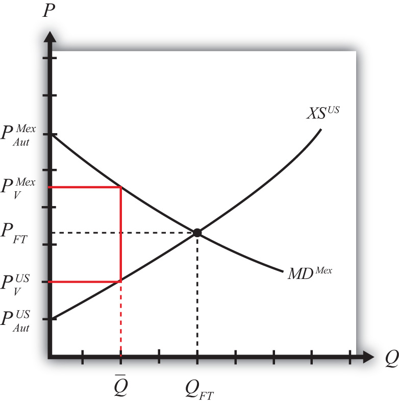Notice that a unique set of prices satisfies the equilibrium conditions for every potential VER that is set. If the VER were set lower than , the price wedge would rise, causing a further increase in the Mexican price and a further decrease in the U.S. price.
At the extreme, if the VER were set equal to zero, then the prices in each country would revert to their autarky levels. In this case, the VER would prohibit trade. This situation is similar to an export embargo.
Jeopardy Questions. As in the popular television game show, you are given an answer to a question and you must respond with the question. For example, if the answer is “a tax on imports,” then the correct question is “What is a tariff?”
When a government sets a quantity restriction, the government must implement procedures to prevent exports beyond the restricted level. A binding voluntary export restraint (VER) will result in a higher price in the import country and in the case of a large country, a reduction in the price in the exporter’s market. The price wedge would generate profit opportunities for anyone who could purchase (or produce) the product at the lower price (or cost) in the export market and resell it at the higher price in the import market.
Three basic methods are used to administer VERs.
Jeopardy Questions. As in the popular television game show, you are given an answer to a question and you must respond with the question. For example, if the answer is “a tax on imports,” then the correct question is “What is a tariff?”
Suppose for simplicity that there are only two trading countries: one importing country and one exporting country. The supply and demand curves for the two countries are shown in Figure 7.36 "Welfare Effects of a VER: Large Country Case". PFT is the free trade equilibrium price. At that price, the excess demand by the importing country equals excess supply by the exporter.
Figure 7.36 Welfare Effects of a VER: Large Country Case
The quantity of imports and exports is shown as the blue line segment on each country’s graph (the horizontal distance between the supply and demand curves at the free trade price). Suppose the large exporting country implements a binding voluntary export restraint set equal to the length of the red line segment. When a new equilibrium is reached, the price in the importing country will rise to the level at which import demand is equal to the quota level. The price in the exporting country will fall until export supply is equal to the quota level.
Table 7.15 "Welfare Effects of a Voluntary Export Restraint" provides a summary of the direction and magnitude of the welfare effects to producers, consumers, and the governments in the importing and exporting countries. The aggregate national welfare effects and the world welfare effects are also shown.
Table 7.15 Welfare Effects of a Voluntary Export Restraint
| Importing Country | Exporting Country | |
|---|---|---|
| Consumer Surplus | − (A + B + C + D) | + e |
| Producer Surplus | + A | − (e + f + g + h) |
| Quota Rents | 0 | + (c + g) |
| National Welfare | − (B + C + D) | c − (f + h) |
| World Welfare | − (B + D) − (f + h) |
Refer to Table 7.15 "Welfare Effects of a Voluntary Export Restraint" and Figure 7.36 "Welfare Effects of a VER: Large Country Case" to see how the magnitudes of the changes are represented.
VER effects on the exporting country’s consumers. Consumers of the product in the exporting country experience an increase in well-being as a result of the VER. The decrease in their domestic price raises the amount of consumer surplus in the market.
VER effects on the exporting country’s producers. Producers in the exporting country experience a decrease in well-being as a result of the quota. The decrease in the price of their product in their own market decreases producer surplus in the industry. The price decline also induces a decrease in output, a decrease in employment, and a decrease in profit, payments, or both to fixed costs.
VER effects on the quota rents. Who receives the quota rents depends on how the government administers the quota.
VER effects on the exporting country. The aggregate welfare effect for the country is found by summing the gains and losses to consumers, producers, and the recipients of the quota rents. The net effect consists of three components: a positive terms of trade effect (c), a negative production distortion (h), and a negative consumption distortion (f).
Because there are both positive and negative elements, the net national welfare effect can be either positive or negative. The interesting result, however, is that it can be positive. This means that a VER implemented by a large exporting country may raise national welfare.
Generally speaking, the following are true:
However, it is also important to note that not everyone’s welfare rises when there is an increase in national welfare. Instead, there is a redistribution of income. Consumers of the product and recipients of the quota rents will benefit, but producers may lose. A national welfare increase, then, means that the sum of the gains exceeds the sum of the losses across all individuals in the economy. Economists generally argue that, in this case, compensation from winners to losers can potentially alleviate the redistribution problem.
VER effects on the importing country’s consumers. Consumers of the product in the importing country suffer a reduction in well-being as a result of the VER. The increase in the domestic price of both imported goods and the domestic substitutes reduces the amount of consumer surplus in the market.
VER effects on the importing country’s producers. Producers in the importing country experience an increase in well-being as a result of the VER. The increase in the price of their product increases producer surplus in the industry. The price increases also induce an increase in the output of existing firms (and perhaps the addition of new firms), an increase in employment, and an increase in profit, payments, or both to fixed costs.
VER effects on the importing country. The aggregate welfare effect for the country is found by summing the gains and losses to consumers and producers. The net effect consists of three components: a negative terms of trade effect (C), a negative consumption distortion (D), and a negative production distortion (B).
Since all three components are negative, the VER must result in a reduction in national welfare for the importing country. However, it is important to note that a redistribution of income occurs—that is, some groups gain while others lose. This is especially important because VERs are often suggested by the importing country. This occurs because the importing country’s government is pressured by the import-competing producers to provide protection in the form of an import tariff or quota. Government reluctance to use these policies often leads the importer to negotiate VERs with the exporting country. Although the importing country’s national welfare is reduced, the import-competing producers gain nonetheless.
VER effects on world welfare. The effect on world welfare is found by summing the national welfare effects on the importing and exporting countries. By noting that the terms of trade gain to the importer is equal to the terms of trade loss to the exporter, the world welfare effect reduces to four components: the importer’s negative production distortion (B), the importer’s negative consumption distortion (D), the exporter’s negative consumption distortion (f), and the exporter’s negative production distortion (h). Since each of these is negative, the world welfare effect of the VER is negative. The sum of the losses in the world exceeds the sum of the gains. In other words, we can say that a VER results in a reduction in world production and consumption efficiency.
Jeopardy Questions. As in the popular television game show, you are given an answer to a question and you must respond with the question. For example, if the answer is “a tax on imports,” then the correct question is “What is a tariff?”
Consider the following trade policy action listed along the top row of the table below. In the empty boxes, use the following notation to indicate the effect of the policy on the variables listed in the first column:
+ the variable increases
− the variable decreases
0 the variable does not change
A the variable change is ambiguous (i.e., it may rise, it may fall)
Use a partial equilibrium model to determine the answers, and assume that the shapes of the supply and demand curves are “normal.” Assume that the policy does not begin with, or result in, prohibitive trade policies. Also assume that the policy does not correct for market imperfections or distortions.
Table 7.16 Effects of a VER Elimination
| Elimination of a Binding VER by a Large Exporting Country | |
|---|---|
| Domestic Market Price | |
| Domestic Industry Employment | |
| Domestic Consumer Welfare | |
| Domestic Producer Welfare | |
| Domestic Government Revenue | |
| Domestic National Welfare | |
| Foreign Price | |
| Foreign Consumer Welfare | |
| Foreign Producer Welfare | |
| Foreign National Welfare |
Suppose the United States, the exporting country in free trade, imposes a specific export tax on exports of wheat. A tax on exports will reduce the flow of wheat across the border. It will now cost more to move the product from the United States into Mexico.
As a result, the supply of wheat to the Mexican market will fall, inducing an increase in the price of wheat. Since the United States is assumed to be a large country, the price of all wheat sold in Mexico, both Mexican wheat and U.S. imports, will rise in price. The higher price will reduce Mexico’s import demand.
The reduced wheat supply to Mexico will shift supply back to the U.S. market and induce a reduction in the U.S. price. The lower price will reduce U.S. export supply.
These price effects are identical in direction to the price effects of a tariff, an import quota, and a voluntary export restraint.
A new tax-ridden equilibrium will be reached when the following two conditions are satisfied:
and
where T is the export tax, is the price in Mexico after the tax, and is the price in the United States after the tax.
The first condition represents a price wedge between the final U.S. price and the Mexican price equal to the amount of the export tax. The prices must differ from the tax because U.S. suppliers of wheat must receive the same price for their product regardless of whether the product is sold in the United States or Mexico, and all wheat sold in Mexico must be sold at the same price. Since a tax is collected at the border, the only way for these price equalities within countries to arise is if the price differs across countries by the amount of the tax.
The second condition states that the amount the United States wants to export at its new lower price must be equal to the amount Mexico wants to import at its new higher price. This condition guarantees that world supply of wheat equals world demand for wheat.
The export tax equilibrium is depicted graphically in Figure 7.37 "Depicting an Export Tax Equilibrium: Large Country Case". The Mexican price of wheat rises from PFT to , which reduces its import demand from QFT to QT. The U.S. price of wheat falls from PFT to , which reduces its export supply also from QFT to QT. The difference in the prices between the two markets is equal to the export tax rate T.
Figure 7.37 Depicting an Export Tax Equilibrium: Large Country Case

Notice that there is a unique set of prices that satisfies the equilibrium conditions for every potential export tax that is set. If the tax was set higher than T, the price wedge would rise, causing a further increase in the Mexican price, a further decrease in the U.S. price, and a further reduction in the quantity traded.
Jeopardy Questions. As in the popular television game show, you are given an answer to a question and you must respond with the question. For example, if the answer is “a tax on imports,” then the correct question is “What is a tariff?”
Suppose that there are only two trading countries: one importing country and one exporting country. The supply and demand curves for the two countries are shown in Figure 7.38 "Welfare Effects of an Export Tax: Large Country Case". PFT is the free trade equilibrium price. At that price, the excess demand by the importing country equals excess supply by the exporter.
Figure 7.38 Welfare Effects of an Export Tax: Large Country Case

The quantity of imports and exports is shown as the blue line segment on each country’s graph (the horizontal distance between the supply and demand curves at the free trade price). When a large exporting country implements an export tax, it will cause a decrease in the price of the good on the domestic market and an increase in the price in the rest of the world (RoW). Suppose after the tax, the price in the importing country rises to and the price in the exporting country falls to . If the tax is a specific tax, then the tax rate would be , equal to the length of the green line segment in Figure 7.38 "Welfare Effects of an Export Tax: Large Country Case". If the tax were an ad valorem tax, then the tax rate would be given by
Table 7.17 "Welfare Effects of an Export Tax" provides a summary of the direction and magnitude of the welfare effects to producers, consumers, and the governments in the importing and exporting countries. The aggregate national welfare effects and the world welfare effects are also shown.
Table 7.17 Welfare Effects of an Export Tax
| Importing Country | Exporting Country | |
|---|---|---|
| Consumer Surplus | − (A + B + C + D) | + e |
| Producer Surplus | + A | − (e + f + g + h) |
| Govt. Revenue | 0 | + (c + g) |
| National Welfare | − (B + C + D) | + c − (f + h) |
| World Welfare | − (B + D) − (f + h) |
Refer to Table 7.17 "Welfare Effects of an Export Tax" and Figure 7.38 "Welfare Effects of an Export Tax: Large Country Case" to see how the magnitudes of the changes are represented.
Export tax effects on the exporting country’s consumers. Consumers of the product in the exporting country experience an increase in well-being as a result of the export tax. The decrease in their domestic price raises the amount of consumer surplus in the market.
Export tax effects on the exporting country’s producers. Producers in the exporting country experience a decrease in well-being as a result of the tax. The decrease in the price of their product in their own market decreases producer surplus in the industry. The price decline also induces a decrease in output, a decrease in employment, and a decrease in profit, payments, or both to fixed costs.
Export tax effects on the exporting country’s government. The government receives tax revenue as a result of the export tax. Who benefits from the revenue depends on how the government spends it. Typically, the revenue is simply included as part of the general funds collected by the government from various sources. In this case, it is impossible to identify precisely who benefits. However, these funds help support many government spending programs, which presumably help either most people in the country, as is the case with public goods, or certain worthy groups. Thus someone within the country is the likely recipient of these benefits.
Export tax effects on the exporting country. The aggregate welfare effect for the country is found by summing the gains and losses to consumers and producers. The net effect consists of three components: a positive terms of trade effect (c), a negative consumption distortion (f), and a negative production distortion (h).
Because there are both positive and negative elements, the net national welfare effect can be either positive or negative. The interesting result, however, is that it can be positive. This means that an export tax implemented by a large exporting country may raise national welfare.
Generally speaking, the following are true:
However, it is also important to note that not everyone’s welfare rises when there is an increase in national welfare. Instead, there is a redistribution of income. Producers of the product and recipients of government spending will benefit, but consumers will lose. A national welfare increase, then, means that the sum of the gains exceeds the sum of the losses across all individuals in the economy. Economists generally argue that, in this case, compensation from winners to losers can potentially alleviate the redistribution problem.
Export tax effects on the importing country’s consumers. Consumers of the product in the importing country suffer a reduction in well-being as a result of the export tax. The increase in the price of both imported goods and the domestic substitutes reduces the amount of consumer surplus in the market.
Export tax effects on the importing country’s producers. Producers in the importing country experience an increase in well-being as a result of the export tax. The increase in the price of their product on the domestic market increases producer surplus in the industry. The price increase also induces an increase in the output of existing firms (and perhaps the addition of new firms), an increase in employment, and an increase in profit, payments, or both to fixed costs.
Export tax effects on the importing country’s government. There is no effect on the importing country’s government revenue as a result of the exporter’s tax.
Export tax effects on the importing country. The aggregate welfare effect for the country is found by summing the gains and losses to consumers, producers, and the government. The net effect consists of three components: a negative terms of trade effect (C), a negative production distortion (B), and a negative consumption distortion (D).
Since all three components are negative, the export tax must result in a reduction in national welfare for the importing country. However, it is important to note that a redistribution of income occurs—that is, some groups gain while others lose. In this case, the sum of the losses exceeds the sum of the gains.
Export tax effects on world welfare. The effect on world welfare is found by summing the national welfare effects on the importing and exporting countries. By noting that the terms of trade gain to the exporter is equal to the terms of trade loss to the importer, the world welfare effect reduces to four components: the importer’s negative production distortion (B), the importer’s negative consumption distortion (D), the exporter’s negative consumption distortion (f), and the exporter’s negative production distortion (h). Since each of these is negative, the world welfare effect of the export tax is negative. The sum of the losses in the world exceeds the sum of the gains. In other words, we can say that an export tax results in a reduction in world production and consumption efficiency.
Suppose there are two large countries, the United States and China. Assume that both countries produce and consume clothing. The United States imports clothing from China. Consider the trade policy action listed along the top row of the table below. In the boxes, indicate the effect of the policy on the variables listed in the first column. Use a partial equilibrium, perfect competition model to determine the answers. You do not need to show your work. Use the following notation:
+ the variable increases
− the variable decreases
0 the variable does not change
A the variable change is ambiguous (i.e., it may rise, it may fall)
Table 7.18 Effects of an Export Tax
| Chinese Implementation of an Export Tax | |
|---|---|
| U.S. Domestic Consumer Price | |
| U.S. Domestic Consumer Welfare | |
| U.S. Domestic Producer Welfare | |
| U.S. National Welfare | |
| Chinese Producer Welfare | |
| Chinese Consumer Welfare | |
| Chinese National Welfare |